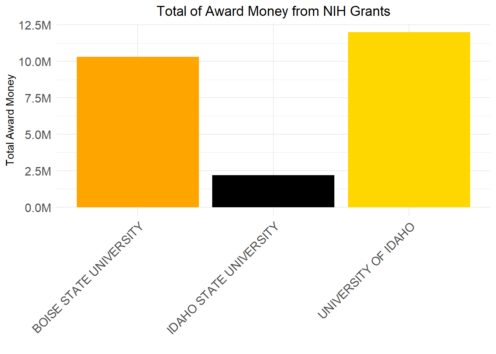

In this blog post, you will get more insight into how much federal funding is awarded at the University of Idaho (UI) by the following federal agencies: the Department of Energy (DOE), the US Department of Agriculture (NIFA), the National Institute of Health (NIH), and National Science Foundation (NSF). These agencies provide funding to different types/ areas of research (agriculture, engineering, biology, computer science, physics, social science, etc.), and we want to determine how much money is going into these types of research. We also are looking at the timeline trend of how much funding is awarded at UI compared to previous years and if there’s any positive or negative impact. We can also see the longevity of the funding, like how long that funding is available. We also did a comparison between institutions in how much funding is awarded across institutions, we compared UI with Boise State University and Idaho State University. This information will provide a general understanding of where UI stands and how it competes with other institutions in acquiring federal funding from those agencies. By the end of this blog post, you will understand the distribution of awarded federal funding across these agencies.
DATA
The data was acquired by the database of each of these federal agencies, the data is open for the public and you can obtain information of currently active/past research projects by institution and principal investigator (PI).
Data Dictionary
This data dictionary provides an overview of the variables that was used in each individual dataset, along with their descriptions and data types. This will give us more understanding of the structure of the data that was selected and will facilitate in the analysis and the interpretation of how UI stands in means of funding from each individual federal agency.
Each of these data sets will provide information in how much money is entering UI. This provide insight, where these funds is being used, like these awarded funding are used to support the activities that are conducted to support the research project, which this is also includes the funding for faculty salaries, graduate student stipends, equipment purchases, and other research-related expenses. This will also help the UI administration to have an overall general idea how these resources are being used and how is benefiting the institution.
NOTE
Some of these data sets are long and extensive and it was shorten, for your benefit to be able to visualize how the data table looks like.
DOE Awards Data (DOEawards.xlsx)
This dataset contains information about awards provided by the Department of Energy (DOE).
Code
DOEawardsUI <-read_xlsx("DOEawards.xlsx", .name_repair ="minimal")DOEawardsUI <-read_xlsx("DOEawards.xlsx")DOEUI_General <- DOEawardsUI %>% dplyr::filter(Institution =='Regents of the University of Idaho')DOEUI_New_Awards <- DOEUI_General %>%select(Title, Institution, PI, Status, `Action Type`, `Program Office`, `Start Date`, `End Date`, `Most Recent Award Date`, `Amount Awarded to Date`)knitr::kable(head(DOEUI_New_Awards))
Title
Institution
PI
Status
Action Type
Program Office
Start Date
End Date
Most Recent Award Date
Amount Awarded to Date
Nuclear Theory at the University of Idaho
Regents of the University of Idaho
Sammarruca, Francesca
Active
Renewal
Office of Nuclear Physics
12/01/2021
11/30/2024
12/29/2023
1812000
Converting methoxy groups on lignin-derived aromatics from a toxic hurdle to a useful resource: a systems-driven approach
Regents of the University of Idaho
Marx, Christopher
Active
New
Office of Biological & Environmental Research
09/01/2021
08/31/2024
08/02/2023
1404162
Integrative Imaging of Plant Roots during Symbiosis with Mycorrhizal Fungi
Regents of the University of Idaho
Vasdekis, Andreas
Active
New
Office of Biological & Environmental Research
08/15/2021
08/14/2024
06/26/2023
1519359
Nutrient and Fine Sediment Transport Driven by Perturbations in River Bed Movement
library(dplyr)# Assuming 'Date' is the column containing the grant date informationstart_date <-as.Date("2021-01-01")end_date <-as.Date("2024-03-15")UIgrants_recent_grantsUSDA <- USDAUI %>%filter(Award.Date >= start_date & Award.Date <= end_date) %>%arrange(desc(Award.Date))library(dplyr)start_date <-as.Date("2024-01-01")end_date <-as.Date("2024-12-31")UIgrants_2024_grantsUSDA <- UIgrants_recent_grantsUSDA %>%filter(Award.Date >= start_date & Award.Date <= end_date) %>%summarise(UIgrants_2024_grantsUSDA =n())
NSF UI Awards Data (NSFUI_2.xlsx)
This dataset consists of awards data from the National Science Foundation (NSF) received by the University of Idaho (UI).
Code
library(readxl)library(dplyr)library(tidyverse)library(knitr) # Ensure knitr is explicitly loaded for kable()# Reading the dataset from an Excel fileNSFUIAwardsActive <-read_xlsx("NSFUI_2.xlsx")# Selecting specific columns, ensure there are no leading or trailing spaces in column namesNSFUI_New_Awards_Specific <- NSFUIAwardsActive %>%select(Title, NSFOrganization, StartDate, LastAmendmentDate, EndDate, AwardedAmountToDate)# Displaying the first few rows in a table formatknitr::kable(head(NSFUI_New_Awards_Specific))
Title
NSFOrganization
StartDate
LastAmendmentDate
EndDate
AwardedAmountToDate
RII Track-1: Idaho Community-engaged Resilience for Energy-Water Systems (I-CREWS)
OIA
08/01/2023
09/11/2023
07/31/2028
$2,099,031.00
RII Track-1: Linking Genome to Phenome to Predict Adaptive Responses of Organisms to Changing Landscapes
OIA
10/01/2018
09/07/2022
03/31/2024
$20,000,000.00
RII Track-2 FEC: Developing a Circular Bio-Based Framework For Architecture, Engineering and Construction Through Additive Manufacturing
OIA
10/01/2021
08/23/2023
09/30/2025
$2,999,475.00
Phase III IUCRC at University of Idaho: Center for Advanced Forestry Systems
EEC
12/15/2019
03/11/2024
11/30/2024
$693,814.00
Conference: NSF EPSCoR Workshop: Intelligent Manufacturing for Extreme Environments
OIA
09/01/2023
08/17/2023
08/31/2024
$99,445.00
Collaborative Research: As above so below: Quantifying the role of simultaneous LLSVPs and continents on Earth’s cooling history using numerical simulations of mantle convection
EAR
07/01/2023
06/08/2023
06/30/2026
$120,952.00
NIH UI Awards Data (NIHUI_2.xlsx)
This dataset contains information about awards received by the University of Idaho (UI) from the National Institutes of Health (NIH).
Identifying phage-bacteria interactions using a multispecies model
NIGMS
8/17/2023
PAR-19-312
5P20GM104420-09
3/15/2015
6/30/2025
7/1/2023
6/30/2024
NA
152932
NA
106362
46570
NA
Sequence-structure-function relationships in human visual photopigments
NIGMS
8/17/2023
PAR-19-312
5P20GM104420-09
3/15/2015
6/30/2025
7/1/2023
6/30/2024
NA
156572
NA
109348
47224
NA
Idaho INBRE Administrative Core
NIGMS
5/8/2023
PA-20-272
3P20GM103408-23S1
9/30/2001
4/30/2024
5/1/2023
4/30/2024
NA
190515
NA
165515
25000
NA
DATA VISUALIZATION AND ANALYSIS
The following visualizations is going to help us visualize UI’s longevity and distribution of the university’s portfolio of current and past awards. It will helps us identify if there are awards that are nearing their expiration.Also, will be doing a comparison with UI between two peer institutions: Boise State University and Idaho State University. This will help us understand UI’s performance in securing federal funding, and how those it measures up against to the other institutions within the same region.
University of Idaho - Current and Future Portfolio
I am creating visualization that will displays the active awards from each sponsor, including their start and end dates, the amount of the award, and the name of the Principal Investigator. This will provide insights of the longevity of the University of Idaho current portfolio of awards. This will also help us identify what awards are near expiration, and which one ones has a longer duration, and to identify if any of these patterns may differ across federal agencies. Ultimately, these visualizations will provide an aid to have an understanding of the sustainability of UIs funding from different federal agencies.
In our first visualization (Figure 1), its a general overview of the longevity of our current active awards. By, looking at this Timeline chart, we can easily point out that our NSF awards has the longest longevity (meaning we will have funding until 2028). Looking at NIH and DOE awards timeline their awards are ending in the year 2024, that is something to keep in mind and following up with the PIs that have those funding to see if they applied for new grants.
USDA data was not added in this timeline chart because it didn’t provide an end date of their current active awards, so for this time of grant will be analyzed and visualized differently
Code
library(readxl)library(dplyr)library(ggplot2)Q1_Data <-read_xlsx("Q1_Compilled_Data.xlsx")# Convert StartDate and EndDate to Date objectsQ1_Data$StartDate <-as.Date(Q1_Data$StartDate, format ="%m/%d/%Y")Q1_Data$EndDate <-as.Date(Q1_Data$EndDate, format ="%m/%d/%Y")# Filter out rows with NA values in StartDate or EndDateQ1_Data <- Q1_Data[complete.cases(Q1_Data$StartDate, Q1_Data$EndDate), ]# Create the Gantt chart# Create the Gantt chartggplot(Q1_Data, aes(y = Sponsor, x = StartDate, xend = EndDate, yend = Sponsor)) +geom_segment(size =10, color ="black") +# Use linewidth instead of sizescale_x_date(date_breaks ="1 year", date_labels ="%Y", limits =c(as.Date("2021-01-01"), as.Date("2029-01-01"))) +labs(title ="Active Awards Timeline",x ="Timeline",y ="Sponsor") +theme_minimal() +theme(legend.position ="bottom")
Warning: Using `size` aesthetic for lines was deprecated in ggplot2 3.4.0.
ℹ Please use `linewidth` instead.
Figure 1: Active Awards at UI. This Gantt Chart provides information of the longevity of the current awards that are at UI.
The previous visualization (Figure 1) was just an overview of the longevity of the current awards that are at UI. The following visualizations, we can see the active awards by sponsor and Principal Investigator (PI). By looking at these visualization we can determine the longevity of their active awards and compare/contrast between sponsors. By looking at these three visualizations (Figure 1, Figure 2, Figure 3), at a glance we can observe that we have more active awards in NSF compared to NIH and DOE, and these NSF awards has a longer end date by 2028, but still we some awards that ends in between 2024/2025 (like for the DOE and NIH awards).
By looking at these visualizations, we can say that for the sponsor DOE, we have only 4 current PIs that have active awards (their expiration date is in late 2024). Which comes to a concern, because why PIs are not applying for awards at DOE, it is something to look into. Like, look for information what the DOE asks to apply for their awards, and also talk to those current PIs at UI, to have their perspective and how can we exppand the universiy’s portfolio this specific sponsor. For the NIH and NSF awards, we have an active flow of awards, but still we have to look into those awards that are to be expired, and what are the plans from those current PIs.
Code
library(ggplot2)library(readxl)library(dplyr)library(lubridate)# Read the dataQ1_Data_PI <-read_xlsx("Q1_Compilled_Data.xlsx")# Filter the data for DOE sponsorQ1_PI_DOE <- Q1_Data_PI %>%filter(Sponsor =="DOE")# Convert StartDate and EndDate to Date objectsQ1_PI_DOE$StartDate <-as.Date(Q1_PI_DOE$StartDate, format ="%m/%d/%Y")Q1_PI_DOE$EndDate <-as.Date(Q1_PI_DOE$EndDate, format ="%m/%d/%Y")# Filter out rows with NA values in StartDate or EndDateQ1_PI_DOE <- Q1_PI_DOE[complete.cases(Q1_PI_DOE$StartDate, Q1_PI_DOE$EndDate), ]# Create the Gantt chartggplot(Q1_PI_DOE, aes(y = PI, x = StartDate, xend = EndDate, yend = PI)) +geom_segment(size =5, color ="darkgrey") +scale_x_date(date_breaks ="1 year", date_labels ="%Y") +labs(title ="Active Awards Timeline by PI",x ="Timeline",y ="Principal Investigator") +theme_minimal() +theme(legend.position ="bottom",plot.title =element_text(hjust =0.5)) # Set horizontal justification to center
Figure 2: Active Award by PI (DOE). This Gantt Chart provides information of the longevity of the current awards that are at UI by PI for DOE.
Code
library(ggplot2)library(readxl)library(dplyr)library(lubridate)# Read the dataQ1_Data_PI <-read_xlsx("Q1_Compilled_Data.xlsx")# Filter the data for DOE sponsorQ1_PI_NIH <- Q1_Data_PI %>%filter(Sponsor =="NIH")# Convert StartDate and EndDate to Date objectsQ1_PI_NIH$StartDate <-as.Date(Q1_PI_NIH$StartDate, format ="%m/%d/%Y")Q1_PI_NIH$EndDate <-as.Date(Q1_PI_NIH$EndDate, format ="%m/%d/%Y")# Filter out rows with NA values in StartDate or EndDateQ1_PI_NIH <- Q1_PI_NIH[complete.cases(Q1_PI_NIH$StartDate, Q1_PI_NIH$EndDate), ]# Create the Gantt chartggplot(Q1_PI_NIH, aes(y = PI, x = StartDate, xend = EndDate, yend = PI)) +geom_segment(size =5, color ="black") +scale_x_date(date_breaks ="1 year", date_labels ="%Y") +labs(title ="Active Awards Timeline by PI",x ="Timeline",y ="Principal Investigator") +theme_minimal() +theme(legend.position ="bottom",plot.title =element_text(hjust =0.5)) # Set horizontal justification to center
Figure 3:Active Award by PI (NIH). This Gantt Chart provides information of the longevity of the current awards that are at UI by PI for NIH.
Code
library(ggplot2)library(readxl)library(dplyr)library(lubridate)# Read the dataQ1_Data_PI <-read_xlsx("Q1_Compilled_Data.xlsx")# Filter the data for DOE sponsorQ1_PI_NSF <- Q1_Data_PI %>%filter(Sponsor =="NSF")# Convert StartDate and EndDate to Date objectsQ1_PI_NSF$StartDate <-as.Date(Q1_PI_NSF$StartDate, format ="%m/%d/%Y")Q1_PI_NSF$EndDate <-as.Date(Q1_PI_NSF$EndDate, format ="%m/%d/%Y")# Filter out rows with NA values in StartDate or EndDateQ1_PI_NSF <- Q1_PI_NSF[complete.cases(Q1_PI_NSF$StartDate, Q1_PI_NSF$EndDate), ]# Create the Gantt chart with adjusted y-axis labelsggplot(Q1_PI_NSF, aes(y = PI, x = StartDate, xend = EndDate, yend = PI)) +geom_segment(size =5, color ="gold") +scale_x_date(date_breaks ="1 year", date_labels ="%Y") +labs(title ="Active Awards Timeline by PI",x ="Timeline",y ="Principal Investigator") +theme_minimal() +theme(legend.position ="bottom",plot.title =element_text(hjust =0.5),axis.text.y =element_text(size =6)) # Reduce the size of y-axis labels
Figure 4Active Award by PI (NSF). This Gantt Chart provides information of the longevity of the current awards that are at UI by PI for NSF.
Code
library(ggplot2)library(scales) # For formatting labels
Attaching package: 'scales'
The following object is masked from 'package:purrr':
discard
The following object is masked from 'package:readr':
col_factor
Code
# Read the dataQ1_Data_Amount <-read_xlsx("Q1_Compilled_Data_4.xlsx")# Convert Amount to numericQ1_Data_Amount$Amount <-as.numeric(Q1_Data_Amount$Amount)
Warning: NAs introduced by coercion
Code
# Check if there are any non-numeric values in Amountnon_numeric <- Q1_Data_Amount[!is.na(as.numeric(Q1_Data_Amount$Amount)), ]# Check the structure of the Amount variablestr(Q1_Data_Amount$Amount)
num [1:126] 0 266181 848625 0 0 ...
Code
# Define colors for each sponsorsponsor_colors <-c("DOE"="darkgray", "NSF"="gold", "NIH"="black", "USDA"="lightgray")# Create the bar plot with colors assigned to each sponsorggplot(Q1_Data_Amount, aes(x = Sponsor, y = Amount, fill = Sponsor)) +geom_bar(stat ="summary", fun ="sum") +labs(title ="Total Amount by Sponsor",x ="Sponsor",y ="Total Amount (Millions)") +scale_y_continuous(labels = scales::unit_format(unit ="M")) +theme_minimal() +theme(axis.text.x =element_text(angle =45, hjust =1),plot.title =element_text(hjust =0.5)) +# Adjust title alignmentscale_fill_manual(values = sponsor_colors) # Use manually defined colors for each sponsor
# Convert Amount to numericQ1_Data$Amount <-as.numeric(Q1_Data$Amount)
Warning: NAs introduced by coercion
Code
# Define colors for each sponsorsponsor_colors <-c("DOE"="darkgray", "NSF"="gold", "NIH"="black")# Create the bar plot with PI on the x-axis and filled bars by Sponsorggplot(Q1_Data, aes(x = PI, y = Amount, fill = Sponsor)) +geom_bar(stat ="summary", fun ="sum") +labs(title ="Total Amount by PI and Sponsor",x ="Principal Investigator",y ="Total Amount (Millions)") +scale_y_continuous(labels = scales::unit_format(unit ="M")) +theme_minimal() +theme(axis.text.x =element_text(angle =45, hjust =1, size =8), # Adjust font sizeplot.title =element_text(hjust =0.5)) +# Adjust title alignmentscale_fill_manual(values = sponsor_colors) # Use manually defined colors for each sponsor
University of Idaho - Past Portfolio (5 to 10 Years)
We already saw the current/future portfolio of UI, now lets see how was the performance of UI from the past 5 to 10 years. The reason that I am doing these specific visualization is to have a representation of new awards over the past 5 to 10 years. By doing this, we can identify trends that may lead to positive and/or negative developments in terms of UIs funding sponsors.By observing these trends, if we have an increasing of awards indicates a positive support from those sponsors, while if we have decrease of awards indicates a negative support from those sponsors, and we have to look more in detail why is there that decline and find solutions to improve in achieving acquiring awards from those sponsors.
In our first visualization (Figure 7), its a general overview of the longevity of our current active awards. By, looking at this Timeline chart, we can easily point out that our NSF awards has the longest longevity (meaning we will have funding until 2028). Looking at NIH and DOE awards timeline their awards are ending in the year 2024, that is something to keep in mind and following up with the PIs that have those funding to see if they applied for new grants.
Code
# Read the Excel fileDOEawardsUI_Dates <-read_xlsx("DOEawards.xlsx")
New names:
• `` -> `...27`
Code
filtered_data_UI_DOE <- DOEawardsUI_Dates %>%filter(Institution =='Regents of the University of Idaho')# Assuming the start date column is named "Start_Date"ten_years_ago <-Sys.Date() -years(10) # # Filter the data to include only awards thatfiltered_data_UI_10y_DOE <- filtered_data_UI_DOE %>%filter(`Start Date`>= ten_years_ago)#USDA# Read the Excel fileUSDAawardsUI_Dates <-read_xlsx("USDAtoUI_Edited_YR.xlsx")filtered_data_UI_USDA <- USDAawardsUI_Dates %>%filter(Institution =='University of Idaho')# Assuming the start date column is named "Start_Date"ten_years_ago <-Sys.Date() -years(10) # # Filter the data to include only awards thatfiltered_data_UI_10y_USDA <- filtered_data_UI_USDA %>%filter(`Award Date`>= ten_years_ago)#NIH# Read the Excel fileNIHawardsUI_Dates <-read_xlsx("UI_NIH_ALL_YR.xlsx")filtered_data_UI_NIH <- NIHawardsUI_Dates %>%filter(Institution =='UNIVERSITY OF IDAHO')# Assuming the start date column is named "Start_Date"ten_years_ago <-Sys.Date() -years(10) # # Filter the data to include only awards that# Assuming the date format is Month/Day/Yearfiltered_data_UI_10y_NIH <- filtered_data_UI_NIH %>%filter(as.Date(`Project Start Date`, format ="%m/%d/%Y") >= ten_years_ago)#NSF# Read the Excel fileNSFawardsUI_Dates <-read_xlsx("NSF_ALL_YR.xlsx")filtered_data_UI_NSF <- NSFawardsUI_Dates %>%filter(Institution =='University of Idaho')# Assuming the start date column is named "Start_Date"ten_years_ago <-Sys.Date() -years(10) # # Filter the data to include only awards that# Assuming the date format is Month/Day/Yearfiltered_data_UI_10y_NSF <- filtered_data_UI_NSF %>%filter(as.Date(StartDate, format ="%m/%d/%Y") >= ten_years_ago)# Assuming the column names for "Start Date" vary across datasets, replace "Start Date" with the actual column name for each dataset.# For DOE datasetfiltered_data_UI_10y_DOE <- filtered_data_UI_10y_DOE %>%mutate(Start_Date =as.Date(`Start Date`, format ="Start Date"))# For USDA datasetfiltered_data_UI_10y_USDA <- filtered_data_UI_10y_USDA %>%mutate(Start_Date =as.Date(`Award Date`, format ="Award Date"))# For NIH datasetfiltered_data_UI_10y_NIH <- filtered_data_UI_10y_NIH %>%mutate(Start_Date =as.Date(`Project Start Date`, format ="Project Start Date"))# For NSF datasetfiltered_data_UI_10y_NSF <- filtered_data_UI_10y_NSF %>%mutate(Start_Date =as.Date(StartDate, format ="StartDate"))# Count the number of awards by award date for each datasetaward_counts_DOE <- filtered_data_UI_10y_DOE %>%count(`Start Date`)award_counts_USDA <- filtered_data_UI_10y_USDA %>%count(`Award Date`)award_counts_NIH <- filtered_data_UI_10y_NIH %>%count(`Project Start Date`)award_counts_NSF <- filtered_data_UI_10y_NSF %>%count(StartDate)# Add Sponsor column to each data frameaward_counts_DOE <- award_counts_DOE %>%mutate(Sponsor ="DOE")award_counts_USDA <- award_counts_USDA %>%mutate(Sponsor ="USDA")award_counts_NIH <- award_counts_NIH %>%mutate(Sponsor ="NIH")award_counts_NSF <- award_counts_NSF %>%mutate(Sponsor ="NSF")# For DOE datasetaward_counts_DOE <- award_counts_DOE %>%rename(Start_Date =`Start Date`) %>%mutate(Sponsor ="DOE")# For USDA datasetaward_counts_USDA <- award_counts_USDA %>%rename(Start_Date =`Award Date`) %>%mutate(Sponsor ="USDA")# For NIH datasetaward_counts_NIH <- award_counts_NIH %>%rename(Start_Date =`Project Start Date`) %>%mutate(Sponsor ="NIH")# For NSF datasetaward_counts_NSF <- award_counts_NSF %>%rename(Start_Date = StartDate) %>%mutate(Sponsor ="NSF")# For DOE datasetaward_counts_DOE <- award_counts_DOE %>%mutate(Start_Date =as.Date(Start_Date, format ="%m/%d/%Y")) %>%mutate(Sponsor ="DOE")# For USDA datasetaward_counts_USDA <- award_counts_USDA %>%mutate(Start_Date =as.Date(Start_Date, format ="%m/%d/%Y")) %>%mutate(Sponsor ="USDA")# For NIH datasetaward_counts_NIH <- award_counts_NIH %>%mutate(Start_Date =as.Date(Start_Date, format ="%m/%d/%Y")) %>%mutate(Sponsor ="NIH")# For NSF datasetaward_counts_NSF <- award_counts_NSF %>%mutate(Start_Date =as.Date(Start_Date, format ="%m/%d/%Y")) %>%mutate(Sponsor ="NSF")# Combine all dataframes into a single dataframeall_award_counts <-bind_rows( award_counts_DOE, award_counts_USDA, award_counts_NIH, award_counts_NSF)# Define colors for each sponsorsponsor_colors <-c("DOE"="darkgray", "NSF"="gold", "NIH"="black", "USDA"="lightgray")# Plot the timeline with overlapping lines, adjusted x-axis labels, individual colors, and centralized titleggplot(all_award_counts, aes(x = Start_Date, color = Sponsor, group = Sponsor)) +geom_freqpoly(binwidth =30, size =1) +labs(title ="Awards Timeline by Sponsor",x ="Start Date",y ="Count") +scale_x_date(date_breaks ="1 year", date_labels ="%Y", expand =c(0, 0)) +scale_color_manual(values = sponsor_colors) +theme_minimal() +theme(plot.title =element_text(hjust =0.5) )
Figure 7:
Code
# Read the Excel fileDOEawardsUI_Dates <-read_xlsx("DOEawards.xlsx")
New names:
• `` -> `...27`
Code
filtered_data_UI_DOE <- DOEawardsUI_Dates %>%filter(Institution =='Regents of the University of Idaho')# Assuming the start date column is named "Start_Date"ten_years_ago <-Sys.Date() -years(10) # # Filter the data to include only awards thatfiltered_data_UI_10y_DOE <- filtered_data_UI_DOE %>%filter(`Start Date`>= ten_years_ago)#USDA# Read the Excel fileUSDAawardsUI_Dates <-read_xlsx("USDAtoUI_Edited_YR.xlsx")filtered_data_UI_USDA <- USDAawardsUI_Dates %>%filter(Institution =='University of Idaho')# Assuming the start date column is named "Start_Date"ten_years_ago <-Sys.Date() -years(10) # # Filter the data to include only awards thatfiltered_data_UI_10y_USDA <- filtered_data_UI_USDA %>%filter(`Award Date`>= ten_years_ago)#NIH# Read the Excel fileNIHawardsUI_Dates <-read_xlsx("UI_NIH_ALL_YR.xlsx")filtered_data_UI_NIH <- NIHawardsUI_Dates %>%filter(Institution =='UNIVERSITY OF IDAHO')# Assuming the start date column is named "Start_Date"ten_years_ago <-Sys.Date() -years(10) # # Filter the data to include only awards that# Assuming the date format is Month/Day/Yearfiltered_data_UI_10y_NIH <- filtered_data_UI_NIH %>%filter(as.Date(`Project Start Date`, format ="%m/%d/%Y") >= ten_years_ago)#NSF# Read the Excel fileNSFawardsUI_Dates <-read_xlsx("NSF_ALL_YR.xlsx")filtered_data_UI_NSF <- NSFawardsUI_Dates %>%filter(Institution =='University of Idaho')# Assuming the start date column is named "Start_Date"ten_years_ago <-Sys.Date() -years(10) # # Filter the data to include only awards that# Assuming the date format is Month/Day/Yearfiltered_data_UI_10y_NSF <- filtered_data_UI_NSF %>%filter(as.Date(StartDate, format ="%m/%d/%Y") >= ten_years_ago)# Remove dollar signs ($) and commas (,) from numeric columnsfiltered_data_UI_10y_NSF <- filtered_data_UI_10y_NSF %>%mutate(AwardedAmountToDate =as.numeric(gsub("[\\$,]", "", AwardedAmountToDate)))# Sum the total amount by start date for each sponsoramount_sum_DOE <- filtered_data_UI_10y_DOE %>%group_by(`Start Date`) %>%summarize(Total_Amount =sum(`Amount Awarded to Date`))amount_sum_USDA <- filtered_data_UI_10y_USDA %>%group_by(`Award Date`) %>%summarize(Total_Amount =sum(`Award Dollars`))amount_sum_NIH <- filtered_data_UI_10y_NIH %>%group_by(`Project Start Date`) %>%summarize(Total_Amount =sum(`Total Cost`))amount_sum_NSF <- filtered_data_UI_10y_NSF %>%group_by(StartDate) %>%summarize(Total_Amount =sum(AwardedAmountToDate))# Add Sponsor column to each data frameamount_sum_DOE <- amount_sum_DOE %>%mutate(Sponsor ="DOE")amount_sum_USDA <- amount_sum_USDA %>%mutate(Sponsor ="USDA")amount_sum_NIH <- amount_sum_NIH %>%mutate(Sponsor ="NIH")amount_sum_NSF <- amount_sum_NSF %>%mutate(Sponsor ="NSF")# For DOE datasetamount_sum_DOE <- amount_sum_DOE %>%rename(Start_Date =`Start Date`) %>%mutate(Sponsor ="DOE")# For USDA datasetamount_sum_USDA <- amount_sum_USDA %>%rename(Start_Date =`Award Date`) %>%mutate(Sponsor ="USDA")# For NIH datasetamount_sum_NIH <- amount_sum_NIH %>%rename(Start_Date =`Project Start Date`) %>%mutate(Sponsor ="NIH")# For NSF datasetamount_sum_NSF <- amount_sum_NSF %>%rename(Start_Date = StartDate) %>%mutate(Sponsor ="NSF")# Assuming Start_Date is in character format, convert it to datetimeamount_sum_DOE <- amount_sum_DOE %>%mutate(Start_Date =as.Date(Start_Date, format ="%m/%d/%Y"))amount_sum_USDA <- amount_sum_USDA %>%mutate(Start_Date =as.Date(Start_Date, format ="%m/%d/%Y"))amount_sum_NIH <- amount_sum_NIH %>%mutate(Start_Date =as.Date(Start_Date, format ="%m/%d/%Y"))amount_sum_NSF <- amount_sum_NSF %>%mutate(Start_Date =as.Date(Start_Date, format ="%m/%d/%Y"))# Combine the data framesall_amount_sum <-bind_rows( amount_sum_DOE %>%mutate(Sponsor ="DOE"), amount_sum_USDA %>%mutate(Sponsor ="USDA"), amount_sum_NIH %>%mutate(Sponsor ="NIH"), amount_sum_NSF %>%mutate(Sponsor ="NSF"))# Define colors for each sponsorsponsor_colors <-c("DOE"="darkgray", "NSF"="gold", "NIH"="black", "USDA"="lightgray")library(scales)# Plot the timeline with overlapping lines, adjusted x-axis labels, individual colors, and centralized titleggplot(all_amount_sum, aes(x = Start_Date, y = Total_Amount /1e6, color = Sponsor, group = Sponsor)) +geom_line(size =1) +labs(title ="Awards Timeline by Sponsor",x ="Start Date",y ="Total Amount (Millions)") +scale_x_date(date_breaks ="1 year", date_labels ="%Y", expand =c(0, 0)) +scale_y_continuous(labels = scales::unit_format(unit ="M")) +scale_color_manual(values = sponsor_colors) +theme_minimal() +theme(plot.title =element_text(hjust =0.5) )
We already saw how UI is performing with these sponsors, but now lest compare with the following peer institutions: Boise State University and Idaho State University. The aim for the following visualizations is to understand how UIs performance in securing awards, conducting research, and acquiring funding measures up against similar institutions in the region or within the same academic field.
NOTE
The following data sets are from the institutions of Boise State University and Idaho State University, the data set from University of Idaho is already been presented at the beginning of the blog post. Also, these data sets are long and extensive and it was shorten, for your benefit to be able to visualize how the data table looks like.
Center of Biomedical Research Excellence in Matrix Biology Phase II
NIGMS
8/24/2023
PA-20-272
3P20GM109095-10S1
8/1/2014
5/31/2024
6/1/2023
5/31/2024
723429
NA
NIGMS
517798
205631
723429
Role of LINC-mediated Mechanosignaling in MSC Aging
NIA
1/29/2024
PA-16-442
5R01AG059923-05
3/1/2020
1/31/2025
2/1/2024
1/31/2025
252208
NA
NIA
184500
67708
252208
Equipment for Spatiotemporal Dynamics of the Genome by 3D Orbital Tracking
NIGMS
5/23/2023
PA-20-272
3R15GM123446-02A1S1
5/17/2017
7/31/2025
8/1/2022
7/31/2025
97574
NA
NIGMS
97574
0
97574
National Science Foundation (NSF)
Code
# Reading the dataset from an Excel fileNSFBSUAwardsActive <-read_xlsx("NSFBSU_2.xlsx")# Selecting specific columns, ensure there are no leading or trailing spaces in column namesNSFBSU_New_Awards_Specific <- NSFBSUAwardsActive %>%select(Title, NSFOrganization, StartDate, LastAmendmentDate, EndDate, AwardedAmountToDate)# Displaying the first few rows in a table formatknitr::kable(head(NSFBSU_New_Awards_Specific,4))
Title
NSFOrganization
StartDate
LastAmendmentDate
EndDate
AwardedAmountToDate
Planning: Track 1: Curriculum and Advancements in Recruitment, Education, and Engineering Retention (CAREER)
EEC
07/15/2022
07/14/2022
06/30/2024
$99,808.00
IUCRC Phase II Boise State University: Center for Atomically Thin Multifunctional Coatings (ATOMIC)
EEC
08/01/2021
11/14/2023
07/31/2026
$582,631.00
MRI: Acquisition of a 600 MHz NMR Console and Cryoprobe to Support Research and Education at Boise State University
DBI
10/01/2022
08/10/2023
09/30/2025
$769,221.00
MRI: Track 1: Acquisition of a Liquid Chromatography-High Resolution Mass Spectrometry System for Multidisciplinary Research and Training
CHE
09/01/2023
08/22/2023
08/31/2026
$710,000.00
Idaho State University - Data Sources
Department of Energy
Code
DOEaward <-read_xlsx("DOEawards.xlsx")
New names:
• `` -> `...27`
Code
DOEIDAHOSATTE_General <- DOEaward %>% dplyr::filter(Institution =='Idaho State University')DOEDAHOSATTE_New_Awards <- DOEIDAHOSATTE_General %>%select(Title, Institution, PI, Status, `Action Type`, `Program Office`, `Start Date`, `End Date`, `Most Recent Award Date`, `Amount Awarded to Date`)knitr::kable(head(DOEDAHOSATTE_New_Awards,4))
Title
Institution
PI
Status
Action Type
Program Office
Start Date
End Date
Most Recent Award Date
Amount Awarded to Date
Precision Electroweak Probe of BSM Physics
Idaho State University
McNulty, Dustin
Active
Renewal
Office of Nuclear Physics
09/01/2023
08/31/2026
08/31/2023
1195000
Mechanistic and Kinetic Analysis of Polymer Deconstruction and Modification by Irradiation for Polymer Upcycling
The Brain-Behavior Relationship: Age, Hearing, and Their Effects on Understanding Speech in Noise
NIDCD
1/12/2023
PA-13-302
7R01DC015240-06
8/15/2016
7/31/2024
6/1/2022
7/31/2024
251216
NA
NIDCD
200394
50822
251216
MOLECULAR ANALYSIS OF MALARIA MITOCHONDRIAL GENE REGULATION
NIAID
12/18/2023
PAR-20-259
5DP2AI164244-03
1/1/2022
12/31/2026
1/1/2024
12/31/2024
364371
NA
NIAID
262096
102275
364371
Timely Response to In-Hospital Deterioration Through Design of Actionable Augmented Intelligence
NIGMS
6/20/2023
PA-19-056
5R01GM137083-04
7/15/2020
6/30/2024
7/1/2023
6/30/2024
397867
NA
NIGMS
356308
41559
397867
The role of metal ion homeostasis in regulating bacterial capsule production
NIAID
8/10/2022
PAR-18-714
1R15AI149725-01A1
8/10/2022
7/31/2025
8/10/2022
7/31/2025
408497
NA
NIGMS
235007
84993
320000
National Science Foundation (NSF)
Code
# Reading the dataset from an Excel fileNSFISUAwardsActive <-read_xlsx("NSFISU_2.xlsx")# Selecting specific columns, ensure there are no leading or trailing spaces in column namesNSFISU_New_Awards_Specific <- NSFISUAwardsActive %>%select(Title, NSFOrganization, StartDate, LastAmendmentDate, EndDate, AwardedAmountToDate)# Displaying the first few rows in a table formatknitr::kable(head(NSFISU_New_Awards_Specific,4))
Title
NSFOrganization
StartDate
LastAmendmentDate
EndDate
AwardedAmountToDate
CDS&E: Immersive Virtual Reality for Discovering Hidden Chemical Information and Improving Multivariate Modeling and Predication
CHE
09/15/2023
09/13/2023
08/31/2026
$449,994.00
GP-IN: Pathways to tribal geosciences careers through cultural connections to iconic landscapes
RISE
01/01/2022
08/16/2021
12/31/2024
$284,964.00
Supporting Transfer Student Success Using a Multidisciplinary Approach
DUE
10/01/2022
07/25/2022
09/30/2028
$1,499,956.00
Reynolds Creek Carbon Critical Zone Observatory
EAR
12/01/2013
07/24/2023
05/31/2024
$3,755,249.00
Data Comparison of Awarded Money
The following visualizations will show us how much awarded money is coming to these institutions, and will provide insights into UI’s competitiveness and standing within its peer group.
Code
# COMPARISON BETWEEEN USDA - AWARD MONEYUSDA_Compare_Data <-read_xlsx("USDA_Combined_Data_Recent_Awards.xlsx")# Define a vector of old names and a new nameold_names <-c("SAES - UNIVERSITY OF IDAHO", "FRST - UNIVERSITY OF IDAHO-FORESTRY SCHOOL")new_name <-"UNIVERSITY OF IDAHO"# Use mutate with ifelse and %in% to change multiple old names to the new nameUSDA_Compare_Data <-mutate(USDA_Compare_Data, Grantee_Name =ifelse(Grantee_Name %in% old_names, new_name, Grantee_Name))# Calculate total award money for each institutionUSDA_total_award_money <- USDA_Compare_Data %>%group_by(Grantee_Name) %>%summarise(USDA_total_award_money =sum(Award_Dollars))my_colors_6 <-c("BOISE STATE UNIVERSITY"="orange", "UNIVERSITY OF IDAHO"="gold")ggplot(USDA_total_award_money, aes(x = Grantee_Name, y = USDA_total_award_money)) +geom_bar(stat ="identity", fill = my_colors_6) +ggtitle("Total of Award Money from USDA Grants") +xlab("") +ylab("Total Award Money") +theme_minimal() +theme(axis.text.x =element_text(angle =45, hjust =1),axis.text.y =element_text(size =12),plot.title =element_text(hjust =0.5)) +# Corrected position of plot titlescale_y_continuous(labels = scales::number_format(scale =1e-6, suffix ="M"))
Figure 9: USDA
Code
# COMPARISON BETWEEEN DOE - AWARD MONEYDOE_Compare_Data <-read_xlsx("DOEawards_Combined_Data.xlsx")# Calculate total award money for each institutionDOE_total_award_money <- DOE_Compare_Data %>%group_by(Institution) %>%summarise(DOE_total_award_money =sum(`Amount Awarded to Date`))# Colorsmy_colors <-c("Boise State University"="orange", "Idaho State University"="black", "Regents of the University of Idaho"="gold")ggplot(DOE_total_award_money, aes(x = Institution, y = DOE_total_award_money)) +geom_bar(stat ="identity", position ="dodge", fill = my_colors) +ggtitle("Total of Award Money from DOE Grants") +xlab("") +ylab("Total Award Money") +theme_minimal() +theme(axis.text.x =element_text(angle =45, hjust =1, size =12), # Adjust size of x-axis labelsaxis.text.y =element_text(size =12), # Adjust size of y-axis labelslegend.text =element_text(size =12), # Adjust size of legend textplot.title =element_text(hjust =0.5, size =14)) +# Adjust size of plot titlescale_y_continuous(labels = scales::number_format(scale =1e-6, suffix ="M"))
Figure 10:DOE
Code
# COMPARISON BETWEEEN NSF - AWARD MONEY - NO APARECE LA DATANSF_Compare_Data <-read_xlsx("NSF_Combined_Data.xlsx")# Filter the data for each institutionUI_NSF_data <- NSF_Compare_Data %>%filter(Organization =="Regents of the University of Idaho")BSU_NSF_data <- NSF_Compare_Data %>%filter(Organization =="Boise State University")ISU_NSF_data <- NSF_Compare_Data %>%filter(Organization =="Idaho State University")# Convert AwardedAmountToDate column to numericNSF_Compare_Data$AwardedAmountToDate <-as.numeric(gsub("\\$", "", NSF_Compare_Data$AwardedAmountToDate))
Warning: NAs introduced by coercion
Code
# Remove dollar signs ($) and commas (,) from numeric columnsUI_NSF_data <- UI_NSF_data %>%mutate(AwardedAmountToDate =as.numeric(gsub("[\\$,]", "", AwardedAmountToDate)))# Calculate total award money for each institutionNSF_total_award_money <- NSF_Compare_Data %>%group_by(Organization) %>%summarise(NSF_total_award_money =sum(AwardedAmountToDate, na.rm =TRUE))# Calculate total award money for each institutionNSF_total_award_money <- NSF_Compare_Data %>%group_by(Organization) %>%summarise(NSF_total_award_money =sum(AwardedAmountToDate))# Colorsmy_colors <-c("Boise State University"="orange", "Idaho State University"="black", "Regents of the University of Idaho"="gold")ggplot(NSF_total_award_money, aes(x = Organization, y = NSF_total_award_money)) +geom_bar(stat ="identity", position ="dodge", fill = my_colors) +ggtitle("Total of Award Money from NSF Grants") +xlab("") +ylab("Total Award Money") +theme_minimal() +theme(axis.text.x =element_text(angle =45, hjust =1, size =12), # Adjust size of x-axis labelsaxis.text.y =element_text(size =12), # Adjust size of y-axis labelslegend.text =element_text(size =12), # Adjust size of legend textplot.title =element_text(hjust =0.5, size =14)) +# Adjust size of plot titlescale_y_continuous(labels = scales::number_format(scale =1e-6, suffix ="M"))
# COMPARISON BETWEEEN NIH - AWARD MONEY - CALCULATED THE AVERAGE INSTEAD THE TOTAL AMMOUNTNIH_Compare_Data <-read_xlsx("NIH_Combined_Data.xlsx")# Calculate total award money for each institution, removing NA values in TotalCostNIH_total_award_money <- NIH_Compare_Data %>%group_by(OrganizationName) %>%summarise(NIH_total_award_money =sum(TotalCost, na.rm =TRUE))# Colorsmy_colors_3 <-c("BOISE STATE UNIVERSITY"="orange", "IDAHO STATE UNIVERSITY"="black", "UNIVERSITY OF IDAHO"="gold")ggplot(NIH_total_award_money, aes(x = OrganizationName, y = NIH_total_award_money)) +geom_bar(stat ="identity", position ="dodge", fill = my_colors_3) +ggtitle("Total of Award Money from NIH Grants") +xlab("") +ylab("Total Award Money") +theme_minimal() +theme(axis.text.x =element_text(angle =45, hjust =1, size =12), # Adjust size of x-axis labelsaxis.text.y =element_text(size =12), # Adjust size of y-axis labelslegend.text =element_text(size =12), # Adjust size of legend textplot.title =element_text(hjust =0.5, size =14)) +# Adjust size of plot titlescale_y_continuous(labels = scales::number_format(scale =1e-6, suffix ="M"))

Figure 12:NIH
Data Comparison of Grant Duration
The following visualizations will show us how the duration of the awarded grants of these institutions, and will provide insights into UI’s competitiveness and standing within its peer group. These visualization are for the current active awards from each sponsor.
In our first visualization (Figure 13), its the duration of the current active awards for the sponsor DOE. By, looking at these bar chart, we can easily point out that our DOE awards ends in 4 years compared to Boise State University that ends in 5 years. This means that during that year gap, UI have to look for renewing awards or to apply for new awards. For the NSF award (Figure 14) Idaho State University has the longest duration of their current active awards for 10 years, and University of Idaho comes second. We are coming in par with the Idaho State University, also to clarify some of these awarded grants, depending of the type of grant can go for longer than 5 years. For the NIH award (Figure 15) University of Idaho, is at the top for the the longest duration of their current active awards for the NIH, over 20 years. Like I mentioned before some of these grants can go longer than 5 years.
USDA data was not added for this data visualization because it didn’t provide an end date of their current active awards
Code
# COMPARISON BETWEEEN DOE - Grant Durationlibrary(readxl)DOE_Compare_Data <-read_xlsx("DOEawards_Combined_Data.xlsx")library(dplyr)# Assuming 'start_date' and 'end_date' are columns containing the start and end dates of the grants,# and 'institution' is a column indicating the institution for each grant# Filter the data for each institutionUI_data <- DOE_Compare_Data %>%filter(Institution =="Regents of the University of Idaho")BSU_data <- DOE_Compare_Data %>%filter(Institution =="Boise State University")ISU_data <- DOE_Compare_Data %>%filter(Institution =="Idaho State University")# Calculate the duration of grants for each institution# Convert "Start Date" and "End Date" columns to date objectsUI_data <- UI_data %>%mutate(`Start Date`=as.Date(`Start Date`, format ="%m/%d/%Y"),`End Date`=as.Date(`End Date`, format ="%m/%d/%Y"))# Assuming 'grant_duration' is in daysUI_data <- UI_data %>%mutate(grant_duration =`End Date`-`Start Date`)UI_data <- UI_data %>%mutate(grant_duration_years =as.numeric(grant_duration) /365.25)# BSUBSU_data <- BSU_data %>%mutate(`Start Date`=as.Date(`Start Date`, format ="%m/%d/%Y"),`End Date`=as.Date(`End Date`, format ="%m/%d/%Y"))# Assuming 'grant_duration' is in daysBSU_data <- BSU_data %>%mutate(grant_duration =`End Date`-`Start Date`)BSU_data <- BSU_data %>%mutate(grant_duration_years =as.numeric(grant_duration) /365.25)# ISUISU_data <- ISU_data %>%mutate(`Start Date`=as.Date(`Start Date`, format ="%m/%d/%Y"),`End Date`=as.Date(`End Date`, format ="%m/%d/%Y"))# Assuming 'grant_duration' is in daysISU_data <- ISU_data %>%mutate(grant_duration =`End Date`-`Start Date`)ISU_data <- ISU_data %>%mutate(grant_duration_years =as.numeric(grant_duration) /365.25)# Visualizationlibrary(dplyr)# Assuming UI_data contains the grant duration information for one institution# and other_datasets contain the grant duration information for the other institutions# Combine datasetscombined_data <-bind_rows(UI_data, BSU_data, ISU_data)# Colorsmy_colors <-c("Boise State University"="orange", "Idaho State University"="black", "Regents of the University of Idaho"="gold")# Plotting grant duration as a bar graph# Plotting grant duration as a bar graphlibrary(ggplot2)ggplot(combined_data, aes(x = Institution, y = grant_duration_years)) +geom_bar(stat ="identity", position ="dodge", fill =c(my_colors[combined_data$Institution])) +ggtitle("Grant Duration by Institution") +xlab("") +ylab("Grant Duration (Years)") +theme_minimal() +theme(axis.text.x =element_text(angle =45, hjust =1, size =12), axis.text.y =element_text(size =12), plot.title =element_text(hjust =0.5, size =14))
Figure 13: Grant Duration by Institution (DOE). This Bar Chart provides information of the duration of the current active awards by Institution for DOE.
Code
# COMPARISON BETWEEEN NSF - Grant Durationlibrary(readxl)NSF_Compare_Data <-read_xlsx("NSF_Combined_Data.xlsx")library(dplyr)# Filter the data for each institutionUI_NSF_data <- NSF_Compare_Data %>%filter(Organization =="Regents of the University of Idaho")BSU_NSF_data <- NSF_Compare_Data %>%filter(Organization =="Boise State University")ISU_NSF_data <- NSF_Compare_Data %>%filter(Organization =="Idaho State University")# Calculate the duration of grants for each institution# Convert "Start Date" and "End Date" columns to date objects#UIUI_NSF_data <- UI_NSF_data %>%mutate(`Start Date`=as.Date(StartDate, format ="%m/%d/%Y"),`End Date`=as.Date(EndDate, format ="%m/%d/%Y"))# Assuming 'grant_duration' is in daysUI_NSF_data <- UI_NSF_data %>%mutate(grant_duration =`End Date`-`Start Date`)UI_NSF_data <- UI_NSF_data %>%mutate(grant_duration_years =as.numeric(grant_duration) /365.25)# BSUBSU_NSF_data <- BSU_NSF_data %>%mutate(`Start Date`=as.Date(StartDate, format ="%m/%d/%Y"),`End Date`=as.Date(EndDate, format ="%m/%d/%Y"))# Assuming 'grant_duration' is in daysBSU_NSF_data <- BSU_NSF_data %>%mutate(grant_duration =`End Date`-`Start Date`)BSU_NSF_data <- BSU_NSF_data %>%mutate(grant_duration_years =as.numeric(grant_duration) /365.25)# ISUISU_NSF_data<- ISU_NSF_data %>%mutate(`Start Date`=as.Date(StartDate, format ="%m/%d/%Y"),`End Date`=as.Date(EndDate, format ="%m/%d/%Y"))# Assuming 'grant_duration' is in daysISU_NSF_data <- ISU_NSF_data %>%mutate(grant_duration =`End Date`-`Start Date`)ISU_NSF_data <- ISU_NSF_data %>%mutate(grant_duration_years =as.numeric(grant_duration) /365.25)# Visualizationlibrary(dplyr)# Assuming UI_data contains the grant duration information for one institution# and other_datasets contain the grant duration information for the other institutions# Combine datasetscombined_data_NSF <-bind_rows(UI_NSF_data, BSU_NSF_data, ISU_NSF_data)# Colorsmy_colors <-c("Boise State University"="orange", "Idaho State University"="black", "Regents of the University of Idaho"="gold")# Plotting grant duration as a bar graphlibrary(ggplot2)ggplot(combined_data_NSF, aes(x = Organization, y = grant_duration_years)) +geom_bar(stat ="identity", position ="dodge", fill =c(my_colors[combined_data_NSF$Organization])) +ggtitle("Grant Duration by Organization") +xlab("") +ylab("Grant Duration (Years)") +scale_fill_manual(values = my_colors) +# Apply custom colorstheme_minimal() +theme(axis.text.x =element_text(angle =45, hjust =1, size =12), # Adjust size of x-axis labelsaxis.text.y =element_text(size =12), # Adjust size of y-axis labelslegend.text =element_text(size =12), # Adjust size of legend textplot.title =element_text(hjust =0.5, size =14)) # Adjust size of plot title
Figure 14:Grant Duration by Institution (NSF). This Bar Chart provides information of the duration of the current active awards by Institution for NSF.
Code
# COMPARISON BETWEEEN NIH - Grant Durationlibrary(readxl)NIH_Compare_Data <-read_xlsx("NIH_Combined_Data.xlsx")library(dplyr)# Filter the data for each institutionUI_NIH_data <- NIH_Compare_Data %>%filter(OrganizationName =="UNIVERSITY OF IDAHO")BSU_NIH_data <- NIH_Compare_Data %>%filter(OrganizationName =="BOISE STATE UNIVERSITY")ISU_NIH_data <- NIH_Compare_Data %>%filter(OrganizationName =="IDAHO STATE UNIVERSITY")# Calculate the duration of grants for each institution# Convert "Start Date" and "End Date" columns to date objects#UIUI_NIH_data <- UI_NIH_data%>%mutate(`Start Date`=as.Date(ProjectStartDate, format ="%m/%d/%Y"),`End Date`=as.Date(ProjectEndDate, format ="%m/%d/%Y"))# Assuming 'grant_duration' is in daysUI_NIH_data <- UI_NIH_data %>%mutate(grant_duration =`End Date`-`Start Date`)UI_NIH_data <- UI_NIH_data %>%mutate(grant_duration_years =as.numeric(grant_duration) /365.25)# BSU - no quiere funcionar no tengo la menor idea pqBSU_NIH_data <- BSU_NIH_data %>%mutate(`Start Date`=as.Date(ProjectStartDate, format ="%m/%d/%Y"),`End Date`=as.Date(ProjectEndDate, format ="%m/%d/%Y"))# Assuming 'grant_duration' is in daysBSU_NIH_data <- BSU_NIH_data %>%mutate(grant_duration =`End Date`-`Start Date`)BSU_NIH_data <- BSU_NIH_data %>%mutate(grant_duration_years =as.numeric(grant_duration) /365.25)# ISUISU_NIH_data<- ISU_NIH_data %>%mutate(`Start Date`=as.Date(ProjectStartDate, format ="%m/%d/%Y"),`End Date`=as.Date(ProjectEndDate, format ="%m/%d/%Y"))# Assuming 'grant_duration' is in daysISU_NIH_data <- ISU_NIH_data %>%mutate(grant_duration =`End Date`-`Start Date`)ISU_NIH_data <- ISU_NIH_data %>%mutate(grant_duration_years =as.numeric(grant_duration) /365.25)# Visualizationlibrary(dplyr)# Assuming UI_data contains the grant duration information for one institution# and other_datasets contain the grant duration information for the other institutions# Combine datasetscombined_data_NIH <-bind_rows(UI_NIH_data, BSU_NIH_data, ISU_NIH_data)# Colorsmy_colors_3 <-c("BOISE STATE UNIVERSITY"="orange", "IDAHO STATE UNIVERSITY"="black", "UNIVERSITY OF IDAHO"="gold")# Plotting grant duration as a bar graphlibrary(ggplot2)ggplot(combined_data_NIH, aes(x = OrganizationName, y = grant_duration_years, fill = OrganizationName)) +geom_bar(stat ="identity", position ="dodge", fill = my_colors_3[combined_data_NIH$OrganizationName]) +ggtitle("Grant Duration by Organization") +xlab("") +ylab("Grant Duration (Years)") +scale_fill_manual(values = my_colors_3) +# Apply custom colorstheme_minimal() +theme(axis.text.x =element_text(angle =45, hjust =1, size =12), # Adjust size of x-axis labelsaxis.text.y =element_text(size =12), # Adjust size of y-axis labelslegend.text =element_text(size =12), # Adjust size of legend textplot.title =element_text(hjust =0.5, size =14)) # Adjust size of plot title
Figure 15:Grant Duration by Institution (NIH). This Bar Chart provides information of the duration of the current active awards by Institution for NIH.
By looking at these visualizations, we can say that for the sponsor DOE, is the only one that we the grant duration is less compared with the other sponsors by institution. Which comes to a concern, like how we can expand our portfolio in regards of acquiring more awards from DOE. For NIH and NSF awards, we have an active flow of awards, and some of these awards are going to be active for the formidable future.
Data Comparison of Grant Status
For the last visualizations, I mentioned in the previous section, there’s different types of awarded grants. The following graphs will give us and understanding what type of grants (current active grants) are coming to UI compared to our peer institution.
The only available data for this type of analysis is from the sponsors DOE and NSF
In our first visualization (Figure 16), we are looking at the type of grants that these institutions have in DOE. We have two types of grants which are: new and renewal, for our current active we have 3 that are new and 1 renewal. This a type of data to keep in mind, to see how many grants are coming that are new, or if we have that are renewal. But, looking ar this Boise State University has more in new and renewal for DOE sponsor.
It is not surprising that UI is under performing in acquiring grants from this sponsor. We have seen that from previous visualizations
Figure 17 we are looking at the type of grants that these institutions have in NSF. In contrast to DOE sponsor, we have more types of grants in NSF, which are the following: continuing grant, cooperative agreement, fellowship award, and standard grant. I mentioned before (Grant duration section) that some grants have a longer duration, and that’s because it depends on the type of grant it has (that also applies how much money is being awarded). In general as a whole, Boise State University has more active current awards compared to University of Idaho, so the number of types of grants are going to be different then University of Idaho. So, we are going to focus on University of Idaho, that highest type of grant that we current have is the standard grant followed by continuing grants. The one that is under performing is Fellowship award, and that is because most of these awards are awarded to graduate students. Looking at this we can see that not a lot of graduate students at UI are applying to fellowships in NSF, which is something that can be changed, giving the proper guidance.
Code
# COMPARISON BETWEEEN DOE - Grant Statuslibrary(dplyr)library(ggplot2)# Calculate total grant action count for each institutionDOE_Grant_Action <- DOE_Compare_Data %>%group_by(Institution, `Action Type`) %>%summarise(count =n(), .groups ="drop") %>%ungroup()library(ggplot2)# Assuming DOE_Grant_Action is your summarized data frame with counts of Action Type by Institutionggplot(DOE_Grant_Action, aes(x = Institution, y = count, fill =`Action Type`)) +geom_bar(stat ="identity", position ="dodge") +ggtitle("Number of Counts of Action Type by Institution") +xlab("") +ylab("Number of Active Grants") +theme_minimal() +theme(axis.text.x =element_text(angle =45, hjust =1, size =12), # Adjust size of x-axis labelsaxis.text.y =element_text(size =12), # Adjust size of y-axis labelslegend.text =element_text(size =12), # Adjust size of legend textplot.title =element_text(hjust =0.5, size =14))
Figure 16: Type of Grant for current active awards for DOE.
Code
# COMPARISON BETWEEEN NSF - Grant Statuslibrary(dplyr)library(ggplot2)# Calculate total grant action count for each institutionNSF_Grant_Award_Instrument <- NSF_Compare_Data %>%group_by(Organization, AwardInstrument) %>%summarise(count =n(), .groups ="drop") %>%ungroup()# Check unique levels of AwardInstrumentunique_levels <-unique(NSF_Grant_Award_Instrument$AwardInstrument)# Adjust my_colors_4 to match the number of unique levelsmy_colors_4 <-c("navyblue", "darkgreen", "darkorange", "darkred") # or any other color palette you prefer# Plot with adjusted colorsggplot(NSF_Grant_Award_Instrument, aes(x = Organization, y = count, fill = AwardInstrument)) +geom_bar(stat ="identity", position ="dodge") +ggtitle("Number of Counts of Action Type by Institution") +xlab("") +ylab("Number of Active Grants") +scale_fill_manual(values = my_colors_4) +# Add this line to set custom colorstheme_minimal() +theme(axis.text.x =element_text(angle =45, hjust =1, size =12), axis.text.y =element_text(size =12), legend.text =element_text(size =12), plot.title =element_text(hjust =0.5, size =14))
Figure 17: Type of Grant for current active awards for NSF.
By looking at these visualizations, we can have an understanding of the types of grants that we have at UI for our current awards. I think to expand UIs portfolio is to provide information and workshops for graduate students to have the opportunity to apply for fellowship awards, which will help them to further continue on their research projects.
CONLUSIONS/SUMMARY
Source Code
---title: "BCB 520 - Midterm Portfolio Post"subtitle: "In Progress"author: "Geraline Trossi-Torres"date: "2024-03-18"categories: [Midterm, DataViz, Visualization]image: Profile4.jpgcode-fold: truecode-tools: truedescription: "In Progress"---## PREAMBLEIn this blog post, you will get more insight into how much federal funding is awarded at the University of Idaho (UI) by the following federal agencies: the Department of Energy (DOE), the US Department of Agriculture (NIFA), the National Institute of Health (NIH), and National Science Foundation (NSF). These agencies provide funding to different types/ areas of research (agriculture, engineering, biology, computer science, physics, social science, etc.), and we want to determine how much money is going into these types of research. We also are looking at the timeline trend of how much funding is awarded at UI compared to previous years and if there's any positive or negative impact. We can also see the longevity of the funding, like how long that funding is available. We also did a comparison between institutions in how much funding is awarded across institutions, we compared UI with Boise State University and Idaho State University. This information will provide a general understanding of where UI stands and how it competes with other institutions in acquiring federal funding from those agencies. By the end of this blog post, you will understand the distribution of awarded federal funding across these agencies.## DATAThe data was acquired by the database of each of these federal agencies, the data is open for the public and you can obtain information of currently active/past research projects by institution and principal investigator (PI).### Data DictionaryThis data dictionary provides an overview of the variables that was used in each individual dataset, along with their descriptions and data types. This will give us more understanding of the structure of the data that was selected and will facilitate in the analysis and the interpretation of how UI stands in means of funding from each individual federal agency.```{r, include=FALSE}library(readxl)library(dplyr)library(tidyverse)library(lubridate)library(knitr)library(ggplot2)``````{r}DataDictionary <-read_xlsx("Data Dictionary.xlsx")knitr::kable(head(DataDictionary ))```### Summary of Data SourcesEach of these data sets will provide information in how much money is entering UI. This provide insight, where these funds is being used, like these awarded funding are used to support the activities that are conducted to support the research project, which this is also includes the funding for faculty salaries, graduate student stipends, equipment purchases, and other research-related expenses. This will also help the UI administration to have an overall general idea how these resources are being used and how is benefiting the institution.::: callout-note## NOTESome of these data sets are long and extensive and it was shorten, for your benefit to be able to visualize how the data table looks like.:::#### DOE Awards Data (DOEawards.xlsx)This dataset contains information about awards provided by the Department of Energy (DOE).```{r, message=FALSE, warning=FALSE}DOEawardsUI <-read_xlsx("DOEawards.xlsx", .name_repair ="minimal")DOEawardsUI <-read_xlsx("DOEawards.xlsx")DOEUI_General <- DOEawardsUI %>% dplyr::filter(Institution =='Regents of the University of Idaho')DOEUI_New_Awards <- DOEUI_General %>%select(Title, Institution, PI, Status, `Action Type`, `Program Office`, `Start Date`, `End Date`, `Most Recent Award Date`, `Amount Awarded to Date`)knitr::kable(head(DOEUI_New_Awards))library(readr)DOEawardsUI <-suppressMessages(read_xlsx("DOEawards.xlsx"))```#### USDA to UI Awards Data (USDAtoUI.csv): This dataset includes awards data related to the University of Idaho (UI) received from the U.S. Department of Agriculture (USDA).```{r, message=FALSE}suppressPackageStartupMessages(library(readxl))suppressPackageStartupMessages(library(dplyr))suppressPackageStartupMessages(library(tidyverse))``````{r}library(tidyverse)library(readxl)library(knitr)USDAUI <-read.csv("USDAtoUI.csv")knitr::kable(head(USDAUI))library(dplyr)# Assuming 'Date' is the column containing the grant date informationstart_date <-as.Date("2021-01-01")end_date <-as.Date("2024-03-15")UIgrants_recent_grantsUSDA <- USDAUI %>%filter(Award.Date >= start_date & Award.Date <= end_date) %>%arrange(desc(Award.Date))library(dplyr)start_date <-as.Date("2024-01-01")end_date <-as.Date("2024-12-31")UIgrants_2024_grantsUSDA <- UIgrants_recent_grantsUSDA %>%filter(Award.Date >= start_date & Award.Date <= end_date) %>%summarise(UIgrants_2024_grantsUSDA =n())```#### NSF UI Awards Data (NSFUI_2.xlsx)This dataset consists of awards data from the National Science Foundation (NSF) received by the University of Idaho (UI).```{R}library(readxl)library(dplyr)library(tidyverse)library(knitr) # Ensure knitr is explicitly loaded for kable()# Reading the dataset from an Excel fileNSFUIAwardsActive <-read_xlsx("NSFUI_2.xlsx")# Selecting specific columns, ensure there are no leading or trailing spaces in column namesNSFUI_New_Awards_Specific <- NSFUIAwardsActive %>%select(Title, NSFOrganization, StartDate, LastAmendmentDate, EndDate, AwardedAmountToDate)# Displaying the first few rows in a table formatknitr::kable(head(NSFUI_New_Awards_Specific))```#### NIH UI Awards Data (NIHUI_2.xlsx)This dataset contains information about awards received by the University of Idaho (UI) from the National Institutes of Health (NIH).```{R}library(readxl)library(dplyr)library(tidyverse)NIHUIAwardsActive <-read_xlsx("NIHUI_2.xlsx")NIHUI_New_Awards_Specific <- NIHUIAwardsActive %>%select('Project Title', 'Administering IC', 'Award Notice Date', `Opportunity Number`, `Project Number`, `Project Start Date`, `Project End Date`, `Budget Start Date`, `Budget End Date`, 'Total Cost', 'Total Cost (Sub Projects)', 'Funding IC(s)', 'Direct Cost IC', 'InDirect Cost IC', 'Total Cost IC')knitr::kable(head(NIHUI_New_Awards_Specific))```## DATA VISUALIZATION AND ANALYSISThe following visualizations is going to help us visualize UI's longevity and distribution of the university's portfolio of current and past awards. It will helps us identify if there are awards that are nearing their expiration.Also, will be doing a comparison with UI between two peer institutions: Boise State University and Idaho State University. This will help us understand UI's performance in securing federal funding, and how those it measures up against to the other institutions within the same region. ### University of Idaho - Current and Future PortfolioI am creating visualization that will displays the active awards from each sponsor, including their start and end dates, the amount of the award, and the name of the Principal Investigator. This will provide insights of the longevity of the University of Idaho current portfolio of awards. This will also help us identify what awards are near expiration, and which one ones has a longer duration, and to identify if any of these patterns may differ across federal agencies. Ultimately, these visualizations will provide an aid to have an understanding of the sustainability of UIs funding from different federal agencies.In our first visualization (**Figure 1**), its a general overview of the longevity of our current active awards. By, looking at this Timeline chart, we can easily point out that our **NSF** awards has the longest longevity (meaning we will have funding until 2028). Looking at **NIH** and **DOE** awards timeline their awards are ending in the year 2024, that is something to keep in mind and following up with the PIs that have those funding to see if they applied for new grants.*USDA data was not added in this timeline chart because it didn't provide an end date of their current active awards, so for this time of grant will be analyzed and visualized differently*```{r}library(readxl)library(dplyr)library(ggplot2)Q1_Data <-read_xlsx("Q1_Compilled_Data.xlsx")# Convert StartDate and EndDate to Date objectsQ1_Data$StartDate <-as.Date(Q1_Data$StartDate, format ="%m/%d/%Y")Q1_Data$EndDate <-as.Date(Q1_Data$EndDate, format ="%m/%d/%Y")# Filter out rows with NA values in StartDate or EndDateQ1_Data <- Q1_Data[complete.cases(Q1_Data$StartDate, Q1_Data$EndDate), ]# Create the Gantt chart# Create the Gantt chartggplot(Q1_Data, aes(y = Sponsor, x = StartDate, xend = EndDate, yend = Sponsor)) +geom_segment(size =10, color ="black") +# Use linewidth instead of sizescale_x_date(date_breaks ="1 year", date_labels ="%Y", limits =c(as.Date("2021-01-01"), as.Date("2029-01-01"))) +labs(title ="Active Awards Timeline",x ="Timeline",y ="Sponsor") +theme_minimal() +theme(legend.position ="bottom")```**Figure 1:** Active Awards at UI. This Gantt Chart provides information of the longevity of the current awards that are at UI.The previous visualization (**Figure 1**) was just an overview of the longevity of the current awards that are at UI. The following visualizations, we can see the active awards by sponsor and Principal Investigator (PI). By looking at these visualization we can determine the longevity of their active awards and compare/contrast between sponsors. By looking at these three visualizations (**Figure 1**, **Figure 2**, **Figure 3**), at a glance we can observe that we have more active awards in NSF compared to NIH and DOE, and these NSF awards has a longer end date by 2028, but still we some awards that ends in between 2024/2025 (like for the DOE and NIH awards).By looking at these visualizations, we can say that for the sponsor **DOE**, we have only **4 current PIs** that have active awards (their expiration date is in late 2024). Which comes to a concern, because why PIs are not applying for awards at DOE, it is something to look into. Like, look for information what the DOE asks to apply for their awards, and also talk to those current PIs at UI, to have their perspective and how can we exppand the universiy's portfolio this specific sponsor. For the **NIH and NSF** awards, we have an active flow of awards, but still we have to look into those awards that are to be expired, and what are the plans from those current PIs.```{r}library(ggplot2)library(readxl)library(dplyr)library(lubridate)# Read the dataQ1_Data_PI <-read_xlsx("Q1_Compilled_Data.xlsx")# Filter the data for DOE sponsorQ1_PI_DOE <- Q1_Data_PI %>%filter(Sponsor =="DOE")# Convert StartDate and EndDate to Date objectsQ1_PI_DOE$StartDate <-as.Date(Q1_PI_DOE$StartDate, format ="%m/%d/%Y")Q1_PI_DOE$EndDate <-as.Date(Q1_PI_DOE$EndDate, format ="%m/%d/%Y")# Filter out rows with NA values in StartDate or EndDateQ1_PI_DOE <- Q1_PI_DOE[complete.cases(Q1_PI_DOE$StartDate, Q1_PI_DOE$EndDate), ]# Create the Gantt chartggplot(Q1_PI_DOE, aes(y = PI, x = StartDate, xend = EndDate, yend = PI)) +geom_segment(size =5, color ="darkgrey") +scale_x_date(date_breaks ="1 year", date_labels ="%Y") +labs(title ="Active Awards Timeline by PI",x ="Timeline",y ="Principal Investigator") +theme_minimal() +theme(legend.position ="bottom",plot.title =element_text(hjust =0.5)) # Set horizontal justification to center```**Figure 2:** Active Award by PI (DOE). This Gantt Chart provides information of the longevity of the current awards that are at UI by PI for DOE.```{r}library(ggplot2)library(readxl)library(dplyr)library(lubridate)# Read the dataQ1_Data_PI <-read_xlsx("Q1_Compilled_Data.xlsx")# Filter the data for DOE sponsorQ1_PI_NIH <- Q1_Data_PI %>%filter(Sponsor =="NIH")# Convert StartDate and EndDate to Date objectsQ1_PI_NIH$StartDate <-as.Date(Q1_PI_NIH$StartDate, format ="%m/%d/%Y")Q1_PI_NIH$EndDate <-as.Date(Q1_PI_NIH$EndDate, format ="%m/%d/%Y")# Filter out rows with NA values in StartDate or EndDateQ1_PI_NIH <- Q1_PI_NIH[complete.cases(Q1_PI_NIH$StartDate, Q1_PI_NIH$EndDate), ]# Create the Gantt chartggplot(Q1_PI_NIH, aes(y = PI, x = StartDate, xend = EndDate, yend = PI)) +geom_segment(size =5, color ="black") +scale_x_date(date_breaks ="1 year", date_labels ="%Y") +labs(title ="Active Awards Timeline by PI",x ="Timeline",y ="Principal Investigator") +theme_minimal() +theme(legend.position ="bottom",plot.title =element_text(hjust =0.5)) # Set horizontal justification to center```**Figure 3:**Active Award by PI (NIH). This Gantt Chart provides information of the longevity of the current awards that are at UI by PI for NIH.```{r}library(ggplot2)library(readxl)library(dplyr)library(lubridate)# Read the dataQ1_Data_PI <-read_xlsx("Q1_Compilled_Data.xlsx")# Filter the data for DOE sponsorQ1_PI_NSF <- Q1_Data_PI %>%filter(Sponsor =="NSF")# Convert StartDate and EndDate to Date objectsQ1_PI_NSF$StartDate <-as.Date(Q1_PI_NSF$StartDate, format ="%m/%d/%Y")Q1_PI_NSF$EndDate <-as.Date(Q1_PI_NSF$EndDate, format ="%m/%d/%Y")# Filter out rows with NA values in StartDate or EndDateQ1_PI_NSF <- Q1_PI_NSF[complete.cases(Q1_PI_NSF$StartDate, Q1_PI_NSF$EndDate), ]# Create the Gantt chart with adjusted y-axis labelsggplot(Q1_PI_NSF, aes(y = PI, x = StartDate, xend = EndDate, yend = PI)) +geom_segment(size =5, color ="gold") +scale_x_date(date_breaks ="1 year", date_labels ="%Y") +labs(title ="Active Awards Timeline by PI",x ="Timeline",y ="Principal Investigator") +theme_minimal() +theme(legend.position ="bottom",plot.title =element_text(hjust =0.5),axis.text.y =element_text(size =6)) # Reduce the size of y-axis labels```**Figure 4**Active Award by PI (NSF). This Gantt Chart provides information of the longevity of the current awards that are at UI by PI for NSF.```{r}library(ggplot2)library(scales) # For formatting labels# Read the dataQ1_Data_Amount <-read_xlsx("Q1_Compilled_Data_4.xlsx")# Convert Amount to numericQ1_Data_Amount$Amount <-as.numeric(Q1_Data_Amount$Amount)# Check if there are any non-numeric values in Amountnon_numeric <- Q1_Data_Amount[!is.na(as.numeric(Q1_Data_Amount$Amount)), ]# Check the structure of the Amount variablestr(Q1_Data_Amount$Amount)# Define colors for each sponsorsponsor_colors <-c("DOE"="darkgray", "NSF"="gold", "NIH"="black", "USDA"="lightgray")# Create the bar plot with colors assigned to each sponsorggplot(Q1_Data_Amount, aes(x = Sponsor, y = Amount, fill = Sponsor)) +geom_bar(stat ="summary", fun ="sum") +labs(title ="Total Amount by Sponsor",x ="Sponsor",y ="Total Amount (Millions)") +scale_y_continuous(labels = scales::unit_format(unit ="M")) +theme_minimal() +theme(axis.text.x =element_text(angle =45, hjust =1),plot.title =element_text(hjust =0.5)) +# Adjust title alignmentscale_fill_manual(values = sponsor_colors) # Use manually defined colors for each sponsor```**Figure 5:**```{r}# Convert Amount to numericQ1_Data$Amount <-as.numeric(Q1_Data$Amount)# Define colors for each sponsorsponsor_colors <-c("DOE"="darkgray", "NSF"="gold", "NIH"="black")# Create the bar plot with PI on the x-axis and filled bars by Sponsorggplot(Q1_Data, aes(x = PI, y = Amount, fill = Sponsor)) +geom_bar(stat ="summary", fun ="sum") +labs(title ="Total Amount by PI and Sponsor",x ="Principal Investigator",y ="Total Amount (Millions)") +scale_y_continuous(labels = scales::unit_format(unit ="M")) +theme_minimal() +theme(axis.text.x =element_text(angle =45, hjust =1, size =8), # Adjust font sizeplot.title =element_text(hjust =0.5)) +# Adjust title alignmentscale_fill_manual(values = sponsor_colors) # Use manually defined colors for each sponsor```**Figure 6:**### University of Idaho - Past Portfolio (5 to 10 Years)We already saw the current/future portfolio of UI, now lets see how was the performance of UI from the past 5 to 10 years. The reason that I am doing these specific visualization is to have a representation of new awards over the past 5 to 10 years. By doing this, we can identify trends that may lead to positive and/or negative developments in terms of UIs funding sponsors.By observing these trends, if we have an increasing of awards indicates a positive support from those sponsors, while if we have decrease of awards indicates a negative support from those sponsors, and we have to look more in detail why is there that decline and find solutions to improve in achieving acquiring awards from those sponsors.In our first visualization (**Figure 7**), its a general overview of the longevity of our current active awards. By, looking at this Timeline chart, we can easily point out that our **NSF** awards has the longest longevity (meaning we will have funding until 2028). Looking at **NIH** and **DOE** awards timeline their awards are ending in the year 2024, that is something to keep in mind and following up with the PIs that have those funding to see if they applied for new grants.```{r}# Read the Excel fileDOEawardsUI_Dates <-read_xlsx("DOEawards.xlsx")filtered_data_UI_DOE <- DOEawardsUI_Dates %>%filter(Institution =='Regents of the University of Idaho')# Assuming the start date column is named "Start_Date"ten_years_ago <-Sys.Date() -years(10) # # Filter the data to include only awards thatfiltered_data_UI_10y_DOE <- filtered_data_UI_DOE %>%filter(`Start Date`>= ten_years_ago)#USDA# Read the Excel fileUSDAawardsUI_Dates <-read_xlsx("USDAtoUI_Edited_YR.xlsx")filtered_data_UI_USDA <- USDAawardsUI_Dates %>%filter(Institution =='University of Idaho')# Assuming the start date column is named "Start_Date"ten_years_ago <-Sys.Date() -years(10) # # Filter the data to include only awards thatfiltered_data_UI_10y_USDA <- filtered_data_UI_USDA %>%filter(`Award Date`>= ten_years_ago)#NIH# Read the Excel fileNIHawardsUI_Dates <-read_xlsx("UI_NIH_ALL_YR.xlsx")filtered_data_UI_NIH <- NIHawardsUI_Dates %>%filter(Institution =='UNIVERSITY OF IDAHO')# Assuming the start date column is named "Start_Date"ten_years_ago <-Sys.Date() -years(10) # # Filter the data to include only awards that# Assuming the date format is Month/Day/Yearfiltered_data_UI_10y_NIH <- filtered_data_UI_NIH %>%filter(as.Date(`Project Start Date`, format ="%m/%d/%Y") >= ten_years_ago)#NSF# Read the Excel fileNSFawardsUI_Dates <-read_xlsx("NSF_ALL_YR.xlsx")filtered_data_UI_NSF <- NSFawardsUI_Dates %>%filter(Institution =='University of Idaho')# Assuming the start date column is named "Start_Date"ten_years_ago <-Sys.Date() -years(10) # # Filter the data to include only awards that# Assuming the date format is Month/Day/Yearfiltered_data_UI_10y_NSF <- filtered_data_UI_NSF %>%filter(as.Date(StartDate, format ="%m/%d/%Y") >= ten_years_ago)# Assuming the column names for "Start Date" vary across datasets, replace "Start Date" with the actual column name for each dataset.# For DOE datasetfiltered_data_UI_10y_DOE <- filtered_data_UI_10y_DOE %>%mutate(Start_Date =as.Date(`Start Date`, format ="Start Date"))# For USDA datasetfiltered_data_UI_10y_USDA <- filtered_data_UI_10y_USDA %>%mutate(Start_Date =as.Date(`Award Date`, format ="Award Date"))# For NIH datasetfiltered_data_UI_10y_NIH <- filtered_data_UI_10y_NIH %>%mutate(Start_Date =as.Date(`Project Start Date`, format ="Project Start Date"))# For NSF datasetfiltered_data_UI_10y_NSF <- filtered_data_UI_10y_NSF %>%mutate(Start_Date =as.Date(StartDate, format ="StartDate"))# Count the number of awards by award date for each datasetaward_counts_DOE <- filtered_data_UI_10y_DOE %>%count(`Start Date`)award_counts_USDA <- filtered_data_UI_10y_USDA %>%count(`Award Date`)award_counts_NIH <- filtered_data_UI_10y_NIH %>%count(`Project Start Date`)award_counts_NSF <- filtered_data_UI_10y_NSF %>%count(StartDate)# Add Sponsor column to each data frameaward_counts_DOE <- award_counts_DOE %>%mutate(Sponsor ="DOE")award_counts_USDA <- award_counts_USDA %>%mutate(Sponsor ="USDA")award_counts_NIH <- award_counts_NIH %>%mutate(Sponsor ="NIH")award_counts_NSF <- award_counts_NSF %>%mutate(Sponsor ="NSF")# For DOE datasetaward_counts_DOE <- award_counts_DOE %>%rename(Start_Date =`Start Date`) %>%mutate(Sponsor ="DOE")# For USDA datasetaward_counts_USDA <- award_counts_USDA %>%rename(Start_Date =`Award Date`) %>%mutate(Sponsor ="USDA")# For NIH datasetaward_counts_NIH <- award_counts_NIH %>%rename(Start_Date =`Project Start Date`) %>%mutate(Sponsor ="NIH")# For NSF datasetaward_counts_NSF <- award_counts_NSF %>%rename(Start_Date = StartDate) %>%mutate(Sponsor ="NSF")# For DOE datasetaward_counts_DOE <- award_counts_DOE %>%mutate(Start_Date =as.Date(Start_Date, format ="%m/%d/%Y")) %>%mutate(Sponsor ="DOE")# For USDA datasetaward_counts_USDA <- award_counts_USDA %>%mutate(Start_Date =as.Date(Start_Date, format ="%m/%d/%Y")) %>%mutate(Sponsor ="USDA")# For NIH datasetaward_counts_NIH <- award_counts_NIH %>%mutate(Start_Date =as.Date(Start_Date, format ="%m/%d/%Y")) %>%mutate(Sponsor ="NIH")# For NSF datasetaward_counts_NSF <- award_counts_NSF %>%mutate(Start_Date =as.Date(Start_Date, format ="%m/%d/%Y")) %>%mutate(Sponsor ="NSF")# Combine all dataframes into a single dataframeall_award_counts <-bind_rows( award_counts_DOE, award_counts_USDA, award_counts_NIH, award_counts_NSF)# Define colors for each sponsorsponsor_colors <-c("DOE"="darkgray", "NSF"="gold", "NIH"="black", "USDA"="lightgray")# Plot the timeline with overlapping lines, adjusted x-axis labels, individual colors, and centralized titleggplot(all_award_counts, aes(x = Start_Date, color = Sponsor, group = Sponsor)) +geom_freqpoly(binwidth =30, size =1) +labs(title ="Awards Timeline by Sponsor",x ="Start Date",y ="Count") +scale_x_date(date_breaks ="1 year", date_labels ="%Y", expand =c(0, 0)) +scale_color_manual(values = sponsor_colors) +theme_minimal() +theme(plot.title =element_text(hjust =0.5) )```**Figure 7:**```{r}# Read the Excel fileDOEawardsUI_Dates <-read_xlsx("DOEawards.xlsx")filtered_data_UI_DOE <- DOEawardsUI_Dates %>%filter(Institution =='Regents of the University of Idaho')# Assuming the start date column is named "Start_Date"ten_years_ago <-Sys.Date() -years(10) # # Filter the data to include only awards thatfiltered_data_UI_10y_DOE <- filtered_data_UI_DOE %>%filter(`Start Date`>= ten_years_ago)#USDA# Read the Excel fileUSDAawardsUI_Dates <-read_xlsx("USDAtoUI_Edited_YR.xlsx")filtered_data_UI_USDA <- USDAawardsUI_Dates %>%filter(Institution =='University of Idaho')# Assuming the start date column is named "Start_Date"ten_years_ago <-Sys.Date() -years(10) # # Filter the data to include only awards thatfiltered_data_UI_10y_USDA <- filtered_data_UI_USDA %>%filter(`Award Date`>= ten_years_ago)#NIH# Read the Excel fileNIHawardsUI_Dates <-read_xlsx("UI_NIH_ALL_YR.xlsx")filtered_data_UI_NIH <- NIHawardsUI_Dates %>%filter(Institution =='UNIVERSITY OF IDAHO')# Assuming the start date column is named "Start_Date"ten_years_ago <-Sys.Date() -years(10) # # Filter the data to include only awards that# Assuming the date format is Month/Day/Yearfiltered_data_UI_10y_NIH <- filtered_data_UI_NIH %>%filter(as.Date(`Project Start Date`, format ="%m/%d/%Y") >= ten_years_ago)#NSF# Read the Excel fileNSFawardsUI_Dates <-read_xlsx("NSF_ALL_YR.xlsx")filtered_data_UI_NSF <- NSFawardsUI_Dates %>%filter(Institution =='University of Idaho')# Assuming the start date column is named "Start_Date"ten_years_ago <-Sys.Date() -years(10) # # Filter the data to include only awards that# Assuming the date format is Month/Day/Yearfiltered_data_UI_10y_NSF <- filtered_data_UI_NSF %>%filter(as.Date(StartDate, format ="%m/%d/%Y") >= ten_years_ago)# Remove dollar signs ($) and commas (,) from numeric columnsfiltered_data_UI_10y_NSF <- filtered_data_UI_10y_NSF %>%mutate(AwardedAmountToDate =as.numeric(gsub("[\\$,]", "", AwardedAmountToDate)))# Sum the total amount by start date for each sponsoramount_sum_DOE <- filtered_data_UI_10y_DOE %>%group_by(`Start Date`) %>%summarize(Total_Amount =sum(`Amount Awarded to Date`))amount_sum_USDA <- filtered_data_UI_10y_USDA %>%group_by(`Award Date`) %>%summarize(Total_Amount =sum(`Award Dollars`))amount_sum_NIH <- filtered_data_UI_10y_NIH %>%group_by(`Project Start Date`) %>%summarize(Total_Amount =sum(`Total Cost`))amount_sum_NSF <- filtered_data_UI_10y_NSF %>%group_by(StartDate) %>%summarize(Total_Amount =sum(AwardedAmountToDate))# Add Sponsor column to each data frameamount_sum_DOE <- amount_sum_DOE %>%mutate(Sponsor ="DOE")amount_sum_USDA <- amount_sum_USDA %>%mutate(Sponsor ="USDA")amount_sum_NIH <- amount_sum_NIH %>%mutate(Sponsor ="NIH")amount_sum_NSF <- amount_sum_NSF %>%mutate(Sponsor ="NSF")# For DOE datasetamount_sum_DOE <- amount_sum_DOE %>%rename(Start_Date =`Start Date`) %>%mutate(Sponsor ="DOE")# For USDA datasetamount_sum_USDA <- amount_sum_USDA %>%rename(Start_Date =`Award Date`) %>%mutate(Sponsor ="USDA")# For NIH datasetamount_sum_NIH <- amount_sum_NIH %>%rename(Start_Date =`Project Start Date`) %>%mutate(Sponsor ="NIH")# For NSF datasetamount_sum_NSF <- amount_sum_NSF %>%rename(Start_Date = StartDate) %>%mutate(Sponsor ="NSF")# Assuming Start_Date is in character format, convert it to datetimeamount_sum_DOE <- amount_sum_DOE %>%mutate(Start_Date =as.Date(Start_Date, format ="%m/%d/%Y"))amount_sum_USDA <- amount_sum_USDA %>%mutate(Start_Date =as.Date(Start_Date, format ="%m/%d/%Y"))amount_sum_NIH <- amount_sum_NIH %>%mutate(Start_Date =as.Date(Start_Date, format ="%m/%d/%Y"))amount_sum_NSF <- amount_sum_NSF %>%mutate(Start_Date =as.Date(Start_Date, format ="%m/%d/%Y"))# Combine the data framesall_amount_sum <-bind_rows( amount_sum_DOE %>%mutate(Sponsor ="DOE"), amount_sum_USDA %>%mutate(Sponsor ="USDA"), amount_sum_NIH %>%mutate(Sponsor ="NIH"), amount_sum_NSF %>%mutate(Sponsor ="NSF"))# Define colors for each sponsorsponsor_colors <-c("DOE"="darkgray", "NSF"="gold", "NIH"="black", "USDA"="lightgray")library(scales)# Plot the timeline with overlapping lines, adjusted x-axis labels, individual colors, and centralized titleggplot(all_amount_sum, aes(x = Start_Date, y = Total_Amount /1e6, color = Sponsor, group = Sponsor)) +geom_line(size =1) +labs(title ="Awards Timeline by Sponsor",x ="Start Date",y ="Total Amount (Millions)") +scale_x_date(date_breaks ="1 year", date_labels ="%Y", expand =c(0, 0)) +scale_y_continuous(labels = scales::unit_format(unit ="M")) +scale_color_manual(values = sponsor_colors) +theme_minimal() +theme(plot.title =element_text(hjust =0.5) )```**Figure 8:**### Comparison Between Peers InstitutionsWe already saw how UI is performing with these sponsors, but now lest compare with the following peer institutions: Boise State University and Idaho State University. The aim for the following visualizations is to understand how UIs performance in securing awards, conducting research, and acquiring funding measures up against similar institutions in the region or within the same academic field.::: callout-note## NOTEThe following data sets are from the institutions of Boise State University and Idaho State University, the data set from University of Idaho is already been presented at the beginning of the blog post. Also, these data sets are long and extensive and it was shorten, for your benefit to be able to visualize how the data table looks like.:::#### Boise State University - Data Sources**Department of Agriculture (NIFA)**```{r}BSUUSDA <-read.csv("USDABSU.csv")knitr::kable(head(BSUUSDA,4))```**Department of Energy**```{r}DOEawardsBSU <-read_xlsx("DOEawards.xlsx")DOEBSU_General <- DOEawardsBSU %>% dplyr::filter(Institution =='Boise State University')DOEBSU_New_Awards <- DOEBSU_General %>%select(Title, Institution, PI, Status, `Action Type`, `Program Office`, `Start Date`, `End Date`, `Most Recent Award Date`, `Amount Awarded to Date`)knitr::kable(head(DOEBSU_New_Awards,4))```**National Institutes of Health (NIH)**```{R}NIHBSUAwardsActive <-read_xlsx("NIHBSU_2.xlsx")NIHBSU_New_Awards_Specific <- NIHBSUAwardsActive %>%select('Project Title', 'Administering IC', 'Award Notice Date', `Opportunity Number`, `Project Number`, `Project Start Date`, `Project End Date`, `Budget Start Date`, `Budget End Date`, 'Total Cost', 'Total Cost (Sub Projects)', 'Funding IC(s)', 'Direct Cost IC', 'InDirect Cost IC', 'Total Cost IC')knitr::kable(head(NIHBSU_New_Awards_Specific,4))```**National Science Foundation (NSF)**```{R}# Reading the dataset from an Excel fileNSFBSUAwardsActive <-read_xlsx("NSFBSU_2.xlsx")# Selecting specific columns, ensure there are no leading or trailing spaces in column namesNSFBSU_New_Awards_Specific <- NSFBSUAwardsActive %>%select(Title, NSFOrganization, StartDate, LastAmendmentDate, EndDate, AwardedAmountToDate)# Displaying the first few rows in a table formatknitr::kable(head(NSFBSU_New_Awards_Specific,4))```#### Idaho State University - Data Sources**Department of Energy**```{r}DOEaward <-read_xlsx("DOEawards.xlsx")DOEIDAHOSATTE_General <- DOEaward %>% dplyr::filter(Institution =='Idaho State University')DOEDAHOSATTE_New_Awards <- DOEIDAHOSATTE_General %>%select(Title, Institution, PI, Status, `Action Type`, `Program Office`, `Start Date`, `End Date`, `Most Recent Award Date`, `Amount Awarded to Date`)knitr::kable(head(DOEDAHOSATTE_New_Awards,4))```**Department of Agriculture (NIFA)**```{r}ISUUSDA <-read.csv("USDAISU.csv")knitr::kable(head(ISUUSDA,4))```**National Institutes of Health (NIH)**```{R}NIHISUAwardsActive <-read_xlsx("NIHISU_2.xlsx")NIHISU_New_Awards_Specific <- NIHISUAwardsActive %>%select('Project Title', 'Administering IC', 'Award Notice Date', `Opportunity Number`, `Project Number`, `Project Start Date`, `Project End Date`, `Budget Start Date`, `Budget End Date`, 'Total Cost', 'Total Cost (Sub Projects)', 'Funding IC(s)', 'Direct Cost IC', 'InDirect Cost IC', 'Total Cost IC')knitr::kable(head(NIHISU_New_Awards_Specific,4))```**National Science Foundation (NSF)**```{R}# Reading the dataset from an Excel fileNSFISUAwardsActive <-read_xlsx("NSFISU_2.xlsx")# Selecting specific columns, ensure there are no leading or trailing spaces in column namesNSFISU_New_Awards_Specific <- NSFISUAwardsActive %>%select(Title, NSFOrganization, StartDate, LastAmendmentDate, EndDate, AwardedAmountToDate)# Displaying the first few rows in a table formatknitr::kable(head(NSFISU_New_Awards_Specific,4))```#### Data Comparison of Awarded MoneyThe following visualizations will show us how much awarded money is coming to these institutions, and will provide insights into UI's competitiveness and standing within its peer group.```{R}# COMPARISON BETWEEEN USDA - AWARD MONEYUSDA_Compare_Data <-read_xlsx("USDA_Combined_Data_Recent_Awards.xlsx")# Define a vector of old names and a new nameold_names <-c("SAES - UNIVERSITY OF IDAHO", "FRST - UNIVERSITY OF IDAHO-FORESTRY SCHOOL")new_name <-"UNIVERSITY OF IDAHO"# Use mutate with ifelse and %in% to change multiple old names to the new nameUSDA_Compare_Data <-mutate(USDA_Compare_Data, Grantee_Name =ifelse(Grantee_Name %in% old_names, new_name, Grantee_Name))# Calculate total award money for each institutionUSDA_total_award_money <- USDA_Compare_Data %>%group_by(Grantee_Name) %>%summarise(USDA_total_award_money =sum(Award_Dollars))my_colors_6 <-c("BOISE STATE UNIVERSITY"="orange", "UNIVERSITY OF IDAHO"="gold")ggplot(USDA_total_award_money, aes(x = Grantee_Name, y = USDA_total_award_money)) +geom_bar(stat ="identity", fill = my_colors_6) +ggtitle("Total of Award Money from USDA Grants") +xlab("") +ylab("Total Award Money") +theme_minimal() +theme(axis.text.x =element_text(angle =45, hjust =1),axis.text.y =element_text(size =12),plot.title =element_text(hjust =0.5)) +# Corrected position of plot titlescale_y_continuous(labels = scales::number_format(scale =1e-6, suffix ="M"))```**Figure 9:** USDA```{r}# COMPARISON BETWEEEN DOE - AWARD MONEYDOE_Compare_Data <-read_xlsx("DOEawards_Combined_Data.xlsx")# Calculate total award money for each institutionDOE_total_award_money <- DOE_Compare_Data %>%group_by(Institution) %>%summarise(DOE_total_award_money =sum(`Amount Awarded to Date`))# Colorsmy_colors <-c("Boise State University"="orange", "Idaho State University"="black", "Regents of the University of Idaho"="gold")ggplot(DOE_total_award_money, aes(x = Institution, y = DOE_total_award_money)) +geom_bar(stat ="identity", position ="dodge", fill = my_colors) +ggtitle("Total of Award Money from DOE Grants") +xlab("") +ylab("Total Award Money") +theme_minimal() +theme(axis.text.x =element_text(angle =45, hjust =1, size =12), # Adjust size of x-axis labelsaxis.text.y =element_text(size =12), # Adjust size of y-axis labelslegend.text =element_text(size =12), # Adjust size of legend textplot.title =element_text(hjust =0.5, size =14)) +# Adjust size of plot titlescale_y_continuous(labels = scales::number_format(scale =1e-6, suffix ="M"))```**Figure 10:**DOE```{r}# COMPARISON BETWEEEN NSF - AWARD MONEY - NO APARECE LA DATANSF_Compare_Data <-read_xlsx("NSF_Combined_Data.xlsx")# Filter the data for each institutionUI_NSF_data <- NSF_Compare_Data %>%filter(Organization =="Regents of the University of Idaho")BSU_NSF_data <- NSF_Compare_Data %>%filter(Organization =="Boise State University")ISU_NSF_data <- NSF_Compare_Data %>%filter(Organization =="Idaho State University")# Convert AwardedAmountToDate column to numericNSF_Compare_Data$AwardedAmountToDate <-as.numeric(gsub("\\$", "", NSF_Compare_Data$AwardedAmountToDate))# Remove dollar signs ($) and commas (,) from numeric columnsUI_NSF_data <- UI_NSF_data %>%mutate(AwardedAmountToDate =as.numeric(gsub("[\\$,]", "", AwardedAmountToDate)))# Calculate total award money for each institutionNSF_total_award_money <- NSF_Compare_Data %>%group_by(Organization) %>%summarise(NSF_total_award_money =sum(AwardedAmountToDate, na.rm =TRUE))# Calculate total award money for each institutionNSF_total_award_money <- NSF_Compare_Data %>%group_by(Organization) %>%summarise(NSF_total_award_money =sum(AwardedAmountToDate))# Colorsmy_colors <-c("Boise State University"="orange", "Idaho State University"="black", "Regents of the University of Idaho"="gold")ggplot(NSF_total_award_money, aes(x = Organization, y = NSF_total_award_money)) +geom_bar(stat ="identity", position ="dodge", fill = my_colors) +ggtitle("Total of Award Money from NSF Grants") +xlab("") +ylab("Total Award Money") +theme_minimal() +theme(axis.text.x =element_text(angle =45, hjust =1, size =12), # Adjust size of x-axis labelsaxis.text.y =element_text(size =12), # Adjust size of y-axis labelslegend.text =element_text(size =12), # Adjust size of legend textplot.title =element_text(hjust =0.5, size =14)) +# Adjust size of plot titlescale_y_continuous(labels = scales::number_format(scale =1e-6, suffix ="M"))```**Figure 11:**NSF```{r}# COMPARISON BETWEEEN NIH - AWARD MONEY - CALCULATED THE AVERAGE INSTEAD THE TOTAL AMMOUNTNIH_Compare_Data <-read_xlsx("NIH_Combined_Data.xlsx")# Calculate total award money for each institution, removing NA values in TotalCostNIH_total_award_money <- NIH_Compare_Data %>%group_by(OrganizationName) %>%summarise(NIH_total_award_money =sum(TotalCost, na.rm =TRUE))# Colorsmy_colors_3 <-c("BOISE STATE UNIVERSITY"="orange", "IDAHO STATE UNIVERSITY"="black", "UNIVERSITY OF IDAHO"="gold")ggplot(NIH_total_award_money, aes(x = OrganizationName, y = NIH_total_award_money)) +geom_bar(stat ="identity", position ="dodge", fill = my_colors_3) +ggtitle("Total of Award Money from NIH Grants") +xlab("") +ylab("Total Award Money") +theme_minimal() +theme(axis.text.x =element_text(angle =45, hjust =1, size =12), # Adjust size of x-axis labelsaxis.text.y =element_text(size =12), # Adjust size of y-axis labelslegend.text =element_text(size =12), # Adjust size of legend textplot.title =element_text(hjust =0.5, size =14)) +# Adjust size of plot titlescale_y_continuous(labels = scales::number_format(scale =1e-6, suffix ="M"))```**Figure 12:**NIH#### Data Comparison of Grant DurationThe following visualizations will show us how the duration of the awarded grants of these institutions, and will provide insights into UI's competitiveness and standing within its peer group. These visualization are for the current active awards from each sponsor.In our first visualization (**Figure 13**), its the duration of the current active awards for the sponsor DOE. By, looking at these bar chart, we can easily point out that our **DOE** awards ends in 4 years compared to Boise State University that ends in 5 years. This means that during that year gap, UI have to look for renewing awards or to apply for new awards. For the **NSF** award (**Figure 14**) Idaho State University has the longest duration of their current active awards for 10 years, and University of Idaho comes second. We are coming in par with the Idaho State University, also to clarify some of these awarded grants, depending of the type of grant can go for longer than 5 years. For the **NIH** award (**Figure 15**) University of Idaho, is at the top for the the longest duration of their current active awards for the NIH, over 20 years. Like I mentioned before some of these grants can go longer than 5 years.*USDA data was not added for this data visualization because it didn't provide an end date of their current active awards*```{r}# COMPARISON BETWEEEN DOE - Grant Durationlibrary(readxl)DOE_Compare_Data <-read_xlsx("DOEawards_Combined_Data.xlsx")library(dplyr)# Assuming 'start_date' and 'end_date' are columns containing the start and end dates of the grants,# and 'institution' is a column indicating the institution for each grant# Filter the data for each institutionUI_data <- DOE_Compare_Data %>%filter(Institution =="Regents of the University of Idaho")BSU_data <- DOE_Compare_Data %>%filter(Institution =="Boise State University")ISU_data <- DOE_Compare_Data %>%filter(Institution =="Idaho State University")# Calculate the duration of grants for each institution# Convert "Start Date" and "End Date" columns to date objectsUI_data <- UI_data %>%mutate(`Start Date`=as.Date(`Start Date`, format ="%m/%d/%Y"),`End Date`=as.Date(`End Date`, format ="%m/%d/%Y"))# Assuming 'grant_duration' is in daysUI_data <- UI_data %>%mutate(grant_duration =`End Date`-`Start Date`)UI_data <- UI_data %>%mutate(grant_duration_years =as.numeric(grant_duration) /365.25)# BSUBSU_data <- BSU_data %>%mutate(`Start Date`=as.Date(`Start Date`, format ="%m/%d/%Y"),`End Date`=as.Date(`End Date`, format ="%m/%d/%Y"))# Assuming 'grant_duration' is in daysBSU_data <- BSU_data %>%mutate(grant_duration =`End Date`-`Start Date`)BSU_data <- BSU_data %>%mutate(grant_duration_years =as.numeric(grant_duration) /365.25)# ISUISU_data <- ISU_data %>%mutate(`Start Date`=as.Date(`Start Date`, format ="%m/%d/%Y"),`End Date`=as.Date(`End Date`, format ="%m/%d/%Y"))# Assuming 'grant_duration' is in daysISU_data <- ISU_data %>%mutate(grant_duration =`End Date`-`Start Date`)ISU_data <- ISU_data %>%mutate(grant_duration_years =as.numeric(grant_duration) /365.25)# Visualizationlibrary(dplyr)# Assuming UI_data contains the grant duration information for one institution# and other_datasets contain the grant duration information for the other institutions# Combine datasetscombined_data <-bind_rows(UI_data, BSU_data, ISU_data)# Colorsmy_colors <-c("Boise State University"="orange", "Idaho State University"="black", "Regents of the University of Idaho"="gold")# Plotting grant duration as a bar graph# Plotting grant duration as a bar graphlibrary(ggplot2)ggplot(combined_data, aes(x = Institution, y = grant_duration_years)) +geom_bar(stat ="identity", position ="dodge", fill =c(my_colors[combined_data$Institution])) +ggtitle("Grant Duration by Institution") +xlab("") +ylab("Grant Duration (Years)") +theme_minimal() +theme(axis.text.x =element_text(angle =45, hjust =1, size =12), axis.text.y =element_text(size =12), plot.title =element_text(hjust =0.5, size =14)) ```**Figure 13:** Grant Duration by Institution (DOE). This Bar Chart provides information of the duration of the current active awards by Institution for DOE.```{r}# COMPARISON BETWEEEN NSF - Grant Durationlibrary(readxl)NSF_Compare_Data <-read_xlsx("NSF_Combined_Data.xlsx")library(dplyr)# Filter the data for each institutionUI_NSF_data <- NSF_Compare_Data %>%filter(Organization =="Regents of the University of Idaho")BSU_NSF_data <- NSF_Compare_Data %>%filter(Organization =="Boise State University")ISU_NSF_data <- NSF_Compare_Data %>%filter(Organization =="Idaho State University")# Calculate the duration of grants for each institution# Convert "Start Date" and "End Date" columns to date objects#UIUI_NSF_data <- UI_NSF_data %>%mutate(`Start Date`=as.Date(StartDate, format ="%m/%d/%Y"),`End Date`=as.Date(EndDate, format ="%m/%d/%Y"))# Assuming 'grant_duration' is in daysUI_NSF_data <- UI_NSF_data %>%mutate(grant_duration =`End Date`-`Start Date`)UI_NSF_data <- UI_NSF_data %>%mutate(grant_duration_years =as.numeric(grant_duration) /365.25)# BSUBSU_NSF_data <- BSU_NSF_data %>%mutate(`Start Date`=as.Date(StartDate, format ="%m/%d/%Y"),`End Date`=as.Date(EndDate, format ="%m/%d/%Y"))# Assuming 'grant_duration' is in daysBSU_NSF_data <- BSU_NSF_data %>%mutate(grant_duration =`End Date`-`Start Date`)BSU_NSF_data <- BSU_NSF_data %>%mutate(grant_duration_years =as.numeric(grant_duration) /365.25)# ISUISU_NSF_data<- ISU_NSF_data %>%mutate(`Start Date`=as.Date(StartDate, format ="%m/%d/%Y"),`End Date`=as.Date(EndDate, format ="%m/%d/%Y"))# Assuming 'grant_duration' is in daysISU_NSF_data <- ISU_NSF_data %>%mutate(grant_duration =`End Date`-`Start Date`)ISU_NSF_data <- ISU_NSF_data %>%mutate(grant_duration_years =as.numeric(grant_duration) /365.25)# Visualizationlibrary(dplyr)# Assuming UI_data contains the grant duration information for one institution# and other_datasets contain the grant duration information for the other institutions# Combine datasetscombined_data_NSF <-bind_rows(UI_NSF_data, BSU_NSF_data, ISU_NSF_data)# Colorsmy_colors <-c("Boise State University"="orange", "Idaho State University"="black", "Regents of the University of Idaho"="gold")# Plotting grant duration as a bar graphlibrary(ggplot2)ggplot(combined_data_NSF, aes(x = Organization, y = grant_duration_years)) +geom_bar(stat ="identity", position ="dodge", fill =c(my_colors[combined_data_NSF$Organization])) +ggtitle("Grant Duration by Organization") +xlab("") +ylab("Grant Duration (Years)") +scale_fill_manual(values = my_colors) +# Apply custom colorstheme_minimal() +theme(axis.text.x =element_text(angle =45, hjust =1, size =12), # Adjust size of x-axis labelsaxis.text.y =element_text(size =12), # Adjust size of y-axis labelslegend.text =element_text(size =12), # Adjust size of legend textplot.title =element_text(hjust =0.5, size =14)) # Adjust size of plot title```**Figure 14:**Grant Duration by Institution (NSF). This Bar Chart provides information of the duration of the current active awards by Institution for NSF.```{r}# COMPARISON BETWEEEN NIH - Grant Durationlibrary(readxl)NIH_Compare_Data <-read_xlsx("NIH_Combined_Data.xlsx")library(dplyr)# Filter the data for each institutionUI_NIH_data <- NIH_Compare_Data %>%filter(OrganizationName =="UNIVERSITY OF IDAHO")BSU_NIH_data <- NIH_Compare_Data %>%filter(OrganizationName =="BOISE STATE UNIVERSITY")ISU_NIH_data <- NIH_Compare_Data %>%filter(OrganizationName =="IDAHO STATE UNIVERSITY")# Calculate the duration of grants for each institution# Convert "Start Date" and "End Date" columns to date objects#UIUI_NIH_data <- UI_NIH_data%>%mutate(`Start Date`=as.Date(ProjectStartDate, format ="%m/%d/%Y"),`End Date`=as.Date(ProjectEndDate, format ="%m/%d/%Y"))# Assuming 'grant_duration' is in daysUI_NIH_data <- UI_NIH_data %>%mutate(grant_duration =`End Date`-`Start Date`)UI_NIH_data <- UI_NIH_data %>%mutate(grant_duration_years =as.numeric(grant_duration) /365.25)# BSU - no quiere funcionar no tengo la menor idea pqBSU_NIH_data <- BSU_NIH_data %>%mutate(`Start Date`=as.Date(ProjectStartDate, format ="%m/%d/%Y"),`End Date`=as.Date(ProjectEndDate, format ="%m/%d/%Y"))# Assuming 'grant_duration' is in daysBSU_NIH_data <- BSU_NIH_data %>%mutate(grant_duration =`End Date`-`Start Date`)BSU_NIH_data <- BSU_NIH_data %>%mutate(grant_duration_years =as.numeric(grant_duration) /365.25)# ISUISU_NIH_data<- ISU_NIH_data %>%mutate(`Start Date`=as.Date(ProjectStartDate, format ="%m/%d/%Y"),`End Date`=as.Date(ProjectEndDate, format ="%m/%d/%Y"))# Assuming 'grant_duration' is in daysISU_NIH_data <- ISU_NIH_data %>%mutate(grant_duration =`End Date`-`Start Date`)ISU_NIH_data <- ISU_NIH_data %>%mutate(grant_duration_years =as.numeric(grant_duration) /365.25)# Visualizationlibrary(dplyr)# Assuming UI_data contains the grant duration information for one institution# and other_datasets contain the grant duration information for the other institutions# Combine datasetscombined_data_NIH <-bind_rows(UI_NIH_data, BSU_NIH_data, ISU_NIH_data)# Colorsmy_colors_3 <-c("BOISE STATE UNIVERSITY"="orange", "IDAHO STATE UNIVERSITY"="black", "UNIVERSITY OF IDAHO"="gold")# Plotting grant duration as a bar graphlibrary(ggplot2)ggplot(combined_data_NIH, aes(x = OrganizationName, y = grant_duration_years, fill = OrganizationName)) +geom_bar(stat ="identity", position ="dodge", fill = my_colors_3[combined_data_NIH$OrganizationName]) +ggtitle("Grant Duration by Organization") +xlab("") +ylab("Grant Duration (Years)") +scale_fill_manual(values = my_colors_3) +# Apply custom colorstheme_minimal() +theme(axis.text.x =element_text(angle =45, hjust =1, size =12), # Adjust size of x-axis labelsaxis.text.y =element_text(size =12), # Adjust size of y-axis labelslegend.text =element_text(size =12), # Adjust size of legend textplot.title =element_text(hjust =0.5, size =14)) # Adjust size of plot title```**Figure 15:**Grant Duration by Institution (NIH). This Bar Chart provides information of the duration of the current active awards by Institution for NIH.By looking at these visualizations, we can say that for the sponsor **DOE**, is the only one that we the grant duration is less compared with the other sponsors by institution. Which comes to a concern, like how we can expand our portfolio in regards of acquiring more awards from DOE. For **NIH and NSF** awards, we have an active flow of awards, and some of these awards are going to be active for the formidable future. ### Data Comparison of Grant StatusFor the last visualizations, I mentioned in the previous section, there's different types of awarded grants. The following graphs will give us and understanding what type of grants (current active grants) are coming to UI compared to our peer institution.*The only available data for this type of analysis is from the sponsors DOE and NSF*In our first visualization (**Figure 16**), we are looking at the type of grants that these institutions have in **DOE**. We have two types of grants which are: new and renewal, for our current active we have 3 that are new and 1 renewal. This a type of data to keep in mind, to see how many grants are coming that are new, or if we have that are renewal. But, looking ar this Boise State University has more in new and renewal for DOE sponsor.*It is not surprising that UI is under performing in acquiring grants from this sponsor. We have seen that from previous visualizations***Figure 17** we are looking at the type of grants that these institutions have in **NSF**. In contrast to DOE sponsor, we have more types of grants in NSF, which are the following: continuing grant, cooperative agreement, fellowship award, and standard grant. I mentioned before (Grant duration section) that some grants have a longer duration, and that's because it depends on the type of grant it has (that also applies how much money is being awarded). In general as a whole, Boise State University has more active current awards compared to University of Idaho, so the number of types of grants are going to be different then University of Idaho. So, we are going to focus on University of Idaho, that highest type of grant that we current have is the standard grant followed by continuing grants. The one that is under performing is Fellowship award, and that is because most of these awards are awarded to graduate students. Looking at this we can see that not a lot of graduate students at UI are applying to fellowships in NSF, which is something that can be changed, giving the proper guidance.```{r}# COMPARISON BETWEEEN DOE - Grant Statuslibrary(dplyr)library(ggplot2)# Calculate total grant action count for each institutionDOE_Grant_Action <- DOE_Compare_Data %>%group_by(Institution, `Action Type`) %>%summarise(count =n(), .groups ="drop") %>%ungroup()library(ggplot2)# Assuming DOE_Grant_Action is your summarized data frame with counts of Action Type by Institutionggplot(DOE_Grant_Action, aes(x = Institution, y = count, fill =`Action Type`)) +geom_bar(stat ="identity", position ="dodge") +ggtitle("Number of Counts of Action Type by Institution") +xlab("") +ylab("Number of Active Grants") +theme_minimal() +theme(axis.text.x =element_text(angle =45, hjust =1, size =12), # Adjust size of x-axis labelsaxis.text.y =element_text(size =12), # Adjust size of y-axis labelslegend.text =element_text(size =12), # Adjust size of legend textplot.title =element_text(hjust =0.5, size =14))```**Figure 16:** Type of Grant for current active awards for DOE.```{r}# COMPARISON BETWEEEN NSF - Grant Statuslibrary(dplyr)library(ggplot2)# Calculate total grant action count for each institutionNSF_Grant_Award_Instrument <- NSF_Compare_Data %>%group_by(Organization, AwardInstrument) %>%summarise(count =n(), .groups ="drop") %>%ungroup()# Check unique levels of AwardInstrumentunique_levels <-unique(NSF_Grant_Award_Instrument$AwardInstrument)# Adjust my_colors_4 to match the number of unique levelsmy_colors_4 <-c("navyblue", "darkgreen", "darkorange", "darkred") # or any other color palette you prefer# Plot with adjusted colorsggplot(NSF_Grant_Award_Instrument, aes(x = Organization, y = count, fill = AwardInstrument)) +geom_bar(stat ="identity", position ="dodge") +ggtitle("Number of Counts of Action Type by Institution") +xlab("") +ylab("Number of Active Grants") +scale_fill_manual(values = my_colors_4) +# Add this line to set custom colorstheme_minimal() +theme(axis.text.x =element_text(angle =45, hjust =1, size =12), axis.text.y =element_text(size =12), legend.text =element_text(size =12), plot.title =element_text(hjust =0.5, size =14))```**Figure 17:** Type of Grant for current active awards for NSF.By looking at these visualizations, we can have an understanding of the types of grants that we have at UI for our current awards. I think to expand UIs portfolio is to provide information and workshops for graduate students to have the opportunity to apply for fellowship awards, which will help them to further continue on their research projects.## CONLUSIONS/SUMMARY